一条摂政
兼良公の顔は猿によく似ていた。十三歳で元服する時虚空に怪しき声して「猿のかしらに
烏帽子きせけり」と聞えると、公たちまち縁の方へ走り出で「元服は
未の時の傾きて」と附けたそうだ。予が本誌へ書き掛けた羊の話も例の生活問題など騒々しさに打ち紛れて当世流行の怠業中、未の歳も傾いて
申の年が迫るにつき、
猴の話を書けと博文館からも読者からも勧めらるるまま今度は怠業の起らぬよう手短く
読切として差し上ぐる。
猴の
称えを諸国語でざっと調べると、ヘブリウでコフ、エチオピア語でケフ、ペルシア語でケイビまたクッビ、ギリシア名ケポスまたケフォス、ラテン名ケブス、梵名カピ、誰も知る通り『旧約全書』が出来たパレスチナには猴を産せず。しかしソロモン王が外国から致した商品中に猴ありて、三年に一度タルシシュの船が金銀、
象牙、猴、
孔雀を
齎らすと見ゆ。その象牙以下の名がヘブリウ本来の語でなく象牙はヘブリウでシェン・ハッビム、このハッビム（象）は象の梵名イブハに基づき、孔雀のヘブリウ名トッケイイムは南インドで孔雀をトゲイと呼ぶに出で、猴のヘブリウ名コフは猴の梵名カピをヘブリウ化したので、孔雀は当時インドにのみ産したから推すと、ソロモンが招致した猴も象もアフリカのでなくインドのものと判る。
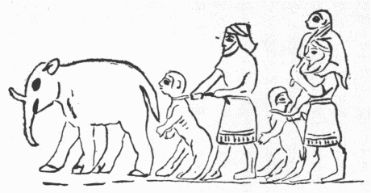
第１図 アッシリアの口碑彫りたる象と猴
それから古アッシリアのシャルマネセルの黒尖碑（第一図）を見ると、一人一大猴を
牽いてインド象の後に随い、次にまた一人同様の猴一疋を牽き、今一疋を肩に乗せて歩む
体を彫り付け、その銘文にこの象と猴はアルメニアまたバクトリアからの進貢するところとある。いずれも寒国でとてもこんな物を産出しないから、これはインドより輸入した象や猴を更にアッシリアへ進献したのだ。ギリシアで最初猴を一国民と
見做し、わが国でも
下人を某丸と呼ぶ例で猴を猴丸と呼んだ。その通りアッシリア人も猴を外国の蛮民と心得たらしく、
件の碑に彫った猴は手足人に同じく頬に
髯あり、したがってアッシリア人は猴をウズムと名づけた。これはヘブリウ語のアダム（すなわち男）の根本らしい。今もインドで崇拝さるるハヌマン猴とて相好もっとも優美な奴がこの彫像に
恰当する由（ハウトン著『古博物学概覧』一九頁已下）。猴のアラブ名キルド、またマイムンまたサダン、ヒンズ名はバンドル、セイロン名はカキ、マレイ名はモニエット、ジャワ名ブデス、英語で十六世紀までは猴類をすべてエープといったが、今は主として尾なく人に近い猴どもの名となり、その他の諸猴を一と
括りにモンキーという。モンキーは仏語のモンヌ、伊語のモンナなどに小という意を表わすキーを添えたものだそうな。さてモンヌもモンナもアラブ名マイムンに出づという。ソクラテスの顔はサチルス（羊頭鬼）に酷似したと伝うるが、孔子もそれと互角な
不男だったらしく、『
荀子』に〈
仲尼の状面
※［＃「にんべん＋其」、U+501B、24-11］を
蒙るがごとし〉、※
［＃「にんべん＋其」、U+501B、24-12］は悪魔払いに蒙る仮面というのが古来の解釈だが、旧知の一英人が、『本草綱目』に
蒙頌一名
蒙貴は尾長猿の小さくて紫黒色のもの、
交趾で畜うて鼠を捕えしむるに猫に
勝るとあるを見て
蒙※［＃「にんべん＋其」、U+501B、24-14］は蒙貴で英語のモンキーだ。孔子の面が猴のようだったのじゃと吹き澄ましいたが、十六世紀に初めて出たモンキーなる英語を西暦紀元前二五五年蘭陵の令と
為ったてふ荀子が知るはずなし、得てしてこんな
法螺が大流行の世と警告し置く。
猴の今一つの英名エープは、梵名カピから出たギリシア名ケフォス、ラテン名ケブス等のケをエと
訛って生じたとも、また古英語で猴をアパ、これ蘭名アープ、古ドイツ名アフォ等と
斉しく猴の鳴き声より出たともいう。さて猴はよく
真似をするから英語の動詞エープは真似をするの義で、梵語等も猴に基づいた真似する意の動詞がある。『本草啓蒙』に猴の和名を挙げてコノミドリ、ヨブコトリ、イソノタチハキ、イソノタモトマイ、コガノミコ、タカノミコ、タカ、マシラ、マシコ、マシ、スズミノコ、サルと十二まで
列ねた。インドで『十誦律』巻一に、動物を二足四足多足無足と分類して諸鳥
猩々および人を二足類とし、巻十九に孔雀、
鸚鵡、
 々
々、諸鳥と猴を鳥類に入れあり。日本でも二足で歩み得るという点から猴を鳥と見て、木の実を食うからコノミドリ、声高く呼ぶから
呼子鳥というたらしい。
昔は
公家衆など生活難から歌道の秘事という事を唱え、伝授に托して金を捲き上げた。呼子鳥は秘事中の大秘事で一通りは猴の事と伝えたが、あるいは
時鳥とか鶏とか、甚だしきは神武天皇の御事だとか、紛々として帰著する所を知らなんだ。それを
嘲った「猿ならば猿にしておけ呼子鳥」と市川
白猿の句がある。イソノタチハキとは何の事か知らぬが、『奥羽観跡聞老誌』九に、気仙郡五葉嶽の山王神は猴を使物とす、毎年六月十五日、猴集って登山しその社を拝む、内に三尺ばかりの古猴一刀を
佩びて登り、不浄参詣は必ずその刀を振って追う、人これを怪しむと出づ。馬の話の中に書いて置いたごとく、アラビアの名馬は交会して洗浄せぬ者を乗せずといい、モーリシャス島人は猴に果物を与えて受け付けぬを有毒と知るという（一八九一年板ルガーの『航行記』巻二）。
惟うに老猴よく人の不浄を嗅ぎ分くる奴を撰び教えて帯刀させ、神前へ不浄のまま出る
奴原を追い恥かしめた旧慣が本邦諸処にあったから、猴をイソノタチハキというたので、イソは神祠の前を指す古名だろう。イソノタモトマイ、コガノミコ、タカノミコ等は古え
 女
女の
君が
巫群を
宰った例もあり、
巫女が猴を馴らして神前に舞わせたから起った名で、タカは好んで高きに上る故の名と知る。
サルとは何の意か知らぬが巫女の
長を
女の君と呼んだなどより考うると、本邦固有の古名らしく、朝鮮とアイヌの辞書があいにく座右にないからそれは抜きとして、ワリス氏が南洋で集めた猴の諸名を見るも、わずかにアルカ（モレラ語）、ルア（サパルア語）、ルカ（テルチ語）位がやや邦名サルに近きを知るのみ。マレイ語にルサあるが鹿を意味す。『翻訳名義集』に
 猴
猴の梵名摩斯

あるいは

迦
とある。予が蔵する二、三の梵語彙を通覧するに、後者は猴の梵名マルカタと分るが摩斯
らしい猴の梵名は一向見えぬ。しかるに和歌に猴を詠む時もっとも多く用いるマシラなる名は古来摩斯
の音に由ると伝うるはいぶかし。ところが妙な事は十七世紀の仏人タヴェルニエーの『印度紀行』に、シエキセラに塔ありてインド中最大なるものの一なり、これに附属する猴飼い場ありて、この地の猴をも近国より来る猴をも収容し商人輩に
供餉す。この塔をマツラと称うと載せ、以前はジュムナ河が塔下を流れ礼拝前身を
浄むるに便り
善かったから巡礼に来る者極めて多かったが、その後河渓が遠ざかったので往日ほど栄えぬと述べあり。英国学士会員ボール註に、これは四世紀に晋の
法顕が参詣した当時、仏教の中心だった
摩頭羅国の名を塔の名と心得伝えたので、十七世紀のオーランゼブ王この地に入って多く堂塔を
壊ったが、猴は今も市中に充満し住民に供養さるとある。法顕の遺書たる『法顕伝』『仏国記』共にこの地で仏法大繁盛の趣を書せど猴の事を少しも記さず。それより二百余年
後れて渡天した唐の
玄奘の『西域記』にはマツラを秣莵羅とし、その都の
周り二十里あり、仏教盛弘する由を述べ、この国に一の乾いた沼ありてその
側に一の
卒塔婆立つ、昔
如来この辺を経行した時猴が蜜を奉ると仏これに水を和してあまねく大衆に施さしめ、猴大いに喜び躍って
坑に
堕ちて死んだが、この福力に由って人間に生まれたと載す。いと古くより猴に縁あった地と見える。
『和州旧跡幽考』に猿沢池は
天竺猴池を模せしと、池の西北の方の松井の坊に
弘法作てふ猴の像あり。
毘舎利国
猴池の西の諸猴如来の鉢を持って樹に登り蜜を採り、池の南の群猿その蜜を仏に奉ると『西域記』を引き居るが、仏はなかなかの甘口で猴はそれを呑み込んで人間に転生したさに
毎々蜜を
舐らせたと見える。また『賢愚因縁経』十二に、
舎衛国の
婆羅門師質が子の有無を問うと六師はなしと答え、仏はあるべしという、喜んで仏と衆僧を供養す。それから帰る途上仏ある沢辺に休むと猴が蜜を奉り、喜んで
起って舞い坑に堕ち死して師質の子と生まる。美貌無双で、家内の器物、蜜で満たさる。相師いわくこの児善徳無比と、因って
摩頭羅瑟質と
字す。蜜勝の意だ。父母に乞うて出家す、この僧渇する時鉢を空中に
擲てば自然に蜜もて満ち、衆人共に飲み足ると。『大智度論』二六に
摩頭波斯咤比丘は
梁棚あるいは壁上、樹上に
跳り上がるとあるも同人だろう。
これらの例から見ると、摩頭羅なる語の本義は何ともあれ、国としても人としても仏典に出るところ猴に縁あれば、猴の和名マシラはこれから出たのかと思わる。
本来サルなる邦名あるにマシラなる外来語をしばしば用いるに及んだは、仏教
弘通の勢力に因ったがもちろんながら、サルは去ると聞えるに反してマシラは
優勝の義に通ずるから専らこれを使うたと見える。『弓馬秘伝聞書』に
祝言の供に猿皮の
空穂を忌む。『閑窓自語』に、元文二年春、出処不明の大猿出でて、
仙洞、二条、近衛諸公の邸を徘徊せしに、
中御門院崩じ諸公も
薨じたとあり。今も職掌により猴の
咄を聞いてもその日休業する者多し。予の知れる料理屋の小女夙慧なるが、小学読本を
浚えるとては必ず
得手と
蟹という風に猴の字を得手と読み居る。かつて熊野川を船で下った時しばしば猴を見たが船人はこれを
野猿また
得手吉と称え決して本名を呼ばなんだ。しかるに『続紀』に見えた柿本朝臣
佐留、歌集の猿丸太夫、
降って上杉謙信の幼名猿松、前田
利常の幼名お猿などあるは上世これを
族霊とする家族が多かった遺風であろう。『のせざる草紙』に、丹波の山中に年をへし猿あり、その名を増尾の
権の
頭と申しける。今もこの辺で猴神の祭日に農民群集するは、サルマサルとて作物が増殖する
賽礼という。得手吉とは男勢の
綽号だが猴よくこれを露出するからの名らしく、「神代巻」に猿田彦の鼻長さ七
咫、『参宮名所図会』に猿丸太夫は道鏡の事と見え、中国で
猴を
狙というも且は男相の象字といえば（『和漢三才図会』十二）、やはりかかる本義と見ゆ。ある博徒いわく、得手吉は得而吉で
延喜がよい、
括り
猿というから毎々縛らるるを忌んで猴をわれらは嫌うと。
唐の
黄巣が乱を
為し金陵を攻めんとした時、弁士往き向うて王の名は
巣、それが金に入ると

となると
威したのですなわち引き去った（『焦氏筆乗』続八）とあると同日の談だ。
昔狂月坊に汝の歌は
拙いというと、「狂月に毛のむく／＼と
生よかしさる歌よみと人に知られん」。その相似たるより
毳々と聞けばたちまち猴を聯想するので、支那で女根を
※※［＃「けものへん＋胡」、U+7322、29-9］［＃「けものへん＋孫」、U+733B、29-9］といい（『笑林広記』三）、京阪でこれを猿猴と呼び、予米国で解剖学を学んだ際、大学生どもこれをモンキーと称えいたなど、『
松屋筆記』にくぼの名てふ
催馬楽のケフクてふ詞を説きたると
攷え合せて、かかる聯想は
何処にも自然に発生し、決して相伝えたるにあらずと判る。ただし『甲子夜話』続十七に、
舅の所へ聟見舞に来り、近頃
疎濶の由をいいかれこれの話に及ぶ。舅この敷物は北国より到来せし熊皮にて候といえば、聟
撫で見てさてさて
所柄とてよき御皮なり、さて思い出しました、妻も
宜しく
御言伝申し上げますとあるは、熊皮は毳々たらぬがその色を以て聯想したのだ。仏経や南欧の文章に美人を叙するとて髪はもちろんその他の毛の色状を細説せるを、毛黒からぬ北欧人が読んで何の感興を生ぜぬは、自分の色状と全く違うからで、黒熊皮を見ても妻を想起せぬのだ。
瑣細な事のようだが、心理論理の学論より政治外交の宣伝を
為すにこの辺の注意が最も必要で、回教徒に
輪廻を説いたり、米人に忠孝を誇ってもちっとも通ぜぬ。マローンの『沙翁集』十に欧州の文豪ラブレー、ラフォンテンなどの女人、その
根を
創口に比して男子に説く趣向を妙案らしく
喋々し居るが、その実東洋人にはすこぶる陳腐で、仏教の律蔵には産門を多くは
瘡門（すなわち創口）と書きあり、『白雲点百韻俳諧』に「
火燵にもえてして猫の恋心」ちゅう句に「雪の日ほどにほこる
古疵」。
彦山権現の戯曲に京極内匠が吉岡の第二女に「
長刀疵が所望じゃわい」。手近にかかる名句があるにとかく欧人ならでは妙案の出ぬ事と心得違う者多きに
呆れる。もちろん
血腥からぬ世となりて長刀疵などは見たくても見られぬにつけ、名句も自然その力を失い行くは是非なしとして、毛皮や刀創を多く見る社会にはそれについて同一の物を期せずして聯想する、東西人情は兄弟じゃ。
女を猴に比する事も東西共にありて、英国の政治家セルデンは女を好まず、
毎にいわく、妻を持つ人はその飾具の勘定に悩殺さる、あたかも猴を
畜う者が不断その破損する
硝子代を償わざるべからざるごとしと。ベロアル・ド・ヴェルビュの『上達方』に婦人は寺で天女、宅で悪魔、
牀で猴と
誚り、仏経には釈尊が弟の難陀その妻と好愛甚だしきを
醒まさんとて彼女の
瞎雌猿に劣れるを示したと出づ。それから
意馬心猿という事、『類聚名物考』に、『慈恩伝』に〈情は猿の逸躁を制し、意は馬の
奔馳を
繋ぐ〉、とあるに基づき、中国人の創作なるように筆しあれど、予『出曜経』三を見るに〈意は放逸なる者のごとく、愛憎は梨樹のごとし、在々処々に遊ぶ、猿の遊びて果を求むるがごとし〉とあれば少なくとも心猿（ここでは意猿）だけは
夙くインドにあった
喩えだ。
『大和本草』に津軽に
果然の自生ありと出づるがどうもあり得べからざる事で、『
 軒
軒小録』に伊藤仁斎の壮時京都近辺の医者が津軽から果然を持ち来ったと記載しあるを読むと、夜分尾で面を
掩うて臥すというから、何か
栗鼠属のもので真の果然でない。果然は一名
※［＃「虫＋隹」、U+873C、31-7］また
仙猴、その鼻孔天に向う、雨ふる時は長い尾で鼻孔を
塞ぐ、群行するに、老者は前に、
少者は後にす。食、相譲り、居、相愛し、人その一を捕うれば
群啼して
相赴きこれを殺すも去らず。これを来すこと
必すべき故、果然と名づくと『本草綱目』に見え、『唐国史補』には
楽羊や
史牟が立身のために
子甥を殺したは、人状獣心、この猴が友のために命を惜しまぬは、獣状人心だと讃美しある。されば帝舜が天子の衣裳に十二章を備えた時、第五章としてこの猴と虎を
繍したのを、わが邦にも
大嘗会等
大祀の礼服に用いられた由『和漢三才図会』等に見ゆ。二十年ほど前、予帰朝の直前
仰鼻猴という物の標品がただ一つ支那から大英博物館に届きしを見て、すなわちその『
爾雅』にいわゆる※
［＃「虫＋隹」、U+873C、31-15］たるを考証し、一文を出した始末は大正四年御即位の節『日本及日本人』六六九号へ録した。かくて津軽に果然の自生は誤聞として、台湾には猴の異種が少なくとも一あり、内地産の猴は学名マカクス・スベシオススの一種に限る。
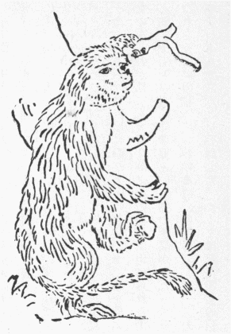
第２図 支那四川産橙色仰鼻猴
猴はなかなか多種だが熱帯と亜熱帯地本位のもの故、欧州にはただ
 爾
爾たるジブラルタルにアフリカに多いマカクス・イヌウスとて日本猴に酷似しながら全く尾のない猴が住んでいたが、十年ほど前流行病で全滅した。そんなこと故欧州の古文学や、
里譚、俗説に猴の話がめっきり見えぬは、あたかも日本の書物、口碑に羊を欠如するに同じく、グベルナチス伯が言った通り、形色、性行のやや似たるよりアジアで猴の出る役目を欧州の物語ではたいてい熊が勤め居る（グ氏『動物譚原』二巻十一章）、支那に猴を出す多種なれば、古来これに注意も深く、それぞれ別に名を附けたは感心すべし。
李時珍曰く〈その類数種あり、小にして尾短きは
猴なり、猴に似て髯多きは
※［＃「據のつくり」、U+8C66、32-15］なり、猴に似て大なるは
※［＃「けものへん＋矍」、U+7383、32-16］なり。大にして尾長く赤目なるは
禺なり。小にして尾長く仰鼻なるは
※［＃「けものへん＋鴪のへん」、U+72D6、32-16］なり。※
［＃「けものへん＋鴪のへん」、U+72D6、32-16］に似て大なるは
果然なり。※
［＃「けものへん＋鴪のへん」、U+72D6、33-1］に似て小なるは
蒙頌なり。※
［＃「けものへん＋鴪のへん」、U+72D6、33-1］に似て善く躍越するは
※※［＃「けものへん＋斬」、U+7351、33-1］［＃「鼬」の「由」に代えて「胡」、U+2A571、33-1］なり。猴に似て
長臂なるは
なり。
に似て金尾なるは
※［＃「けものへん＋（戎−丿）」、33-2］なり。
に似て大きく、能く
猴を食うは
独なり〉。支那の動物は今に十分調ばっていぬから一々推し当つるは徒労だが、小にして尾短きは猴なりといえば、猴は全く日本のと同種ならずも
斉しくマカクス属たるは疑いなし。それも日本と異なり一種に
止まらず、北支那冬寒厳しき地に住むマカクス・チリエンシス（直隷猴）は特に厚き冬毛を具し、マカクス・シニクス（支那猴）は頭のつむじから長髪を放ち
垂る。由って英人は
頭巾猴と呼ぶとはいわゆる楚人
沐猴にして冠すの
好き
対だ。猴の記載は李時珍のがその東洋博物学説の標準とされたから引かんに曰く、
班固の『
白虎通』にいわく猴は
候なり、人の食を設け機を伏するを見れば高きに
憑って四望す、
候に善きものなり、猴好んで面を
拭うて
沐するごとき故に沐猴という。後人
母猴と
訛りまたいよいよ訛って
猴とす。猴の形、
胡人に似たる故
胡孫という。『荘子』に
狙という。馬を
養う者厩中にこれを
畜えば
能く馬病を避く、故に
胡俗猴を
馬留と称す、
状人に似、眼愁胡のごとくにして、頬陥り、
※［＃「口＋慊のつくり」、U+55DB、33-12］、すなわち、食を
蔵す処あり、腹に
脾なく、
行くを以て食を消す、尻に毛なくして尾短し、手足人のごとくにて能く
竪って行く、その声
 々
々（日本のキャッキャッ）として
咳するごとし。
孕む事五月にして子を生んで多く
澗に浴す。その性騒動にして物を害す、これを畜う者、杙上に坐せしめ、
鞭つ事旬月なればすなわち
馴ると。
時珍より約千五百年前に成ったローマの老プリニウスの『博物志』は、
法螺も多いが古欧州
斯学の様子を察するに至重の大著述だ。ローマには猴を産しないが、当時かの帝国極盛で猴も多く輸入されたから、その記載は丸の法螺でないが曰く、猴は最も人に似た動物で種類一ならず、尾の異同でこれを別つ、猴の
黠智驚くべし、ある説に猟人
黐と
履を備うるに猴その人の真似して黐を身に塗り履を
穿きて捕わると、ムキアヌスは猴よく蝋製の
駒を識別し習うて
象戯をさすといった。またいわく尾ある猴は月減ずる時甚だ
欝悒し新月を望んで喜び躍りこれを拝むと、他の諸獣も日月
蝕を
懼るるを見るとさような事もありなん。猴の諸種いずれも
太く子を愛す、人に飼われた猴、子を生めば持ち廻って来客に示し、その人その子を愛撫するを見て大悦びし、あたかも人の親切を解するごとし。さればしばしば子を抱き過ぎて窒息せしむるに至る。
狗頭猴は異常に
獰猛だ。カリトリケ（細毛猴）はまるで他の猴と異なり顔に
鬚あり。エチオピアに産し、その他の気候に適住し得ずというと。博覧無双の名あったプリニウスの猴の記載はこれに止まり、李氏のやや
詳しきに劣れるは、どうしてもローマに自生なく中国に多種の猴を産したからだ。
右に見えた黐と履で猴を捕うる話はストラボンの『印度誌』に出で、曰く、猟人、猴が木の上より見得る処で皿の水で眼を洗い、たちまち黐を盛った皿と替えて置き、退いて番すると、猴下り来って黐で眼を
擦り、盲同然となりて捕わると、エリアヌスの『動物誌』には、猟人猴に履はいて見せ、代わりに鉛の履を置くと、
俺もやって見ようかな、コラドッコイショと上機嫌で来って、その履を穿く。
豈図らんや人は猴よりもまた一層の猴智恵あり、機械仕懸けで動きの取れぬよう作った履故、猴一たび穿きて脱ぐ能わずとある。日本でも熊野人は以前黐で猴を捕えたと伝え、その次第ストラボンの説に同じ。『淵鑑類函』に阮

封渓で
邑人に聞いたは、猩々数百群を成す。里人酒と
槽を
道傍に設け、また草を織りて
下駄を作り、結び連ね置くを見て、その人の祖先の姓名を呼び、奴我を殺さんと欲すと罵って去るが、また再三相語ってちょっと試みようと飲み始めると、甘いから酔ってしまい、下駄を穿くと脱ぐ事がならずことごとく
獲られ、
毛氈の染料として血を取らると載せたが、またエリアヌスの説に似て居る。猩々はもと
々と書く。
『
山海経』に招揺の山に獣あり、その状
禺（尾長猿）のごとくして白耳、伏して
行き人のごとく走る、その名を
々という。人これを食えば善く走る。『
礼記』に〈猩々善く言えども禽獣を離れず〉など支那に古く知れたものでもと支那の属国
交趾に産したらしい。和漢とも只今猴類中ほとんど人の従弟ともいうべきほど人に近い類人猴の内、脳の構造一番人に近いオラン・ウータンを猩々に当て通用するが、これはボルネオとスマタラの大密林に限って樹上に
棲み、交趾には産せぬ。古書に、〈猩々黄毛白耳、伏して行き人のごとく走る、頭顔端正、数百群を成す〉などあるが、一つもオラン・ウータンに合わぬ。『荀子』に〈猩々尾なし〉とありて人に近き由述べ居るが、南部支那に産する手長猿も、無尾だから、
攷えると最初猩々と呼んだは手長猿の一種にほかならじ、後世赤毛織りが外国より入って何で染めたか分らず、猩々の血てふ
謬説行われ、それより転じて赤毛で酒好きのオラン・ウータンを専ら猩々と心得るに及んだのだ。オランは支那になく、たまたまインド洋島にあるを見聞し、海中諸島に産すというところを、例の文体で海中に出づと書いた支那文を日本で読みかじり、『訓蒙図彙大成』に海中に棲む獣なりと註して、波に囲まれた岩上に猩々を図し、猩々の謡曲には猩々を
潯陽江の住としたが、わだつみの底とも知れぬ波間よりてふ句で、もと海に棲むとしたと知れる。この
謡に猩々が霊泉を
酒肆の孝子に授けた由を作ってより、猩々は日本で無性に目出たがられ、桜井秀君は『
蔭涼軒日録』に、延徳三年泉堺の富家へ猩々に化けて入り込み財宝を取り尽した夜盗の記事を見出された。かかる詐欺が行わるべしとは今の人に受け取れぬが、『
義残後覚』七、太郎次てふ大力の男が鬼面を
冒り、鳥羽の作り道で行客を脅かし
追剥するを、松重岩之丞が
斫り
露わす条、『石田軍記』三、加賀野江弥八が平らげた伊吹の山賊鬼装して近郷を
却かした話などを参ずるに、迷信強い世にはあり得べき事だ。
若狭に猩々洞あり。
能登の雲津村数千軒の津なりしに、猩々上陸遊行するを殺した報いの津浪で全滅したとか（『若狭郡県志』二、『能登名跡志』坤巻）、その近村とどの宮は海よりトド上る故、トド浜とて除きあり、渡唐の言い
謬りかとある。トドは海狗の一種で、海狗が人に化ける譚北欧に多い（ケートレーの『精魅誌』）。
惟うに北陸の猩々は海狗を誤認したのだろう。
家康公が
行水役の下女に産ませた
上総介忠輝は有名な暴君だったが、その領地に無類の豪飲今猩々庄左衛門あり、忠輝海に漁して魚多く獲た余興に、臣民に酒を
強いるに、この漁夫三、四斗飲んで酔わず、城へ伴い還り飲ましむるに六斗まで飲んで
睡る。忠輝始終を見届け、かの小男不審とてその腹を
剖くに一滴もなし。しかるにその両脇下に三寸ばかりの
小瓶一つずつあり。砕かんとすれども鉄石ごとくで破れず、その口から三斗ずつ彼が飲んだ六斗の酒風味変らず出た。忠輝悦んで日本無双の重宝猩々瓶と名づけ身を放さず、この殿酒を好み、この瓶に酒を詰め、五日十日海川池に入りびたれど酒不足せず、今猩々の屍を
懇に葬り弔い、親属へ金銀米を賜わった由（『古今武家盛衰記』一九）。これは『
斉東野語』に出た野婆の腰間を剖いて印を得たというのと、大瓶猩々の謡に「あまたの猩々大瓶に上り、泉の口を取るとぞみえしが、
涌き上り、涌き流れ、
汲めども汲めども尽きせぬ泉」とあるを取り合せて造った譚らしい。
『野語』の文は〈野婆は南丹州に
出づ、黄髪
椎髻、裸形
跣足、儼然として一媼のごときなり、群雌牡なく、山谷を上下すること
飛
（猴の一種）のごとし、腰より已下皮あり膝を
蓋う、男子に遇うごとに、必ず負い去りて合を求む、かつて健夫のために殺さる、死するに腰間を手をもって護る、これを剖きて印方寸なるを得、瑩として蒼玉のごとし、文あり符篆に類するなり〉、これは腰下を皮で蓋い玉を護符または装飾として腰間に
佩びた
無下の蛮民を、猴様の獣と誤ったのだ。近時とても軍旅、労働、斎忌等の節一定期間男女別れて群居する民少なからず、古ギリシアやマレー半島や南米に女人国の話あるも全く無根でない（一八一九年リヨン板『レットル・エジフィアント』五巻四九八頁已下。ボーンス文庫本、フンボルト『南米旅行自談』二巻三九九頁已下。クリフォードの『イン・コート・エンド・カムポン』一七一頁已下）。さて野人の女が優種の男に幸せられんと望むは常時で、ギリシアの旧伝にアレキサンダー王の軍女人国に近付いた時、その女王三百人の
娘子軍を率い急ぎ来って王の胤を孕みたいと切願し、聞き届けられて寵愛十三昼夜にわたった。鳥も通わぬ八丈が島へ本土の人が渡ると、天女の後胤てふ美女争うて迎え入れ、同棲
慇懃し、その家の亭主は御婿入り
忝なや、所においての面目たり、帰国までゆるゆるおわしませと快く
暇乞いして他の在所へ行って年月を送ると（『北条五代記』五）。この事早く海外へ聞え、
羨ませたと見え、島名を定かに書かねど一五八五（天正十三）年すなわち『五代記』記事の最末年より二十九年前ローマ出版、ソンドツァ師の『支那大強王国史』に、「日本を
距る遠からず島あり、女人国と名づく、女のみ住んで善く弓矢を用ゆ、射るに便せんとて右の乳房を枯らす（古ギリシア女人国話の引き写しだ）、毎年某の月に日本より商船渡り、まず二人を女王に使わし船員の数を告ぐれば、王何の日に一同上陸せよと命ず、当日に及び、女王船員と同数の婦女をして各符標を記せる
履一足を持たせて浜辺に趣き、乱雑に打ち捨て返らしむ。さて男ども上陸して各手当り次第に履を穿くと、女ども来って自分の符標ある履はいた男を引っ張り行く、醜婦が美男に配し女王が極悪の下郎に当るもかれこれ言わぬ定めだ。かくて女王が
勅定した月数が過ぎると「別れの風かよ、さて恨めしや、いつまた遇うやら遇わぬやら」で銘々男の住所姓名を書いて渡し、涙ながらに船は出て行く帆掛けて走る、さて情けの種を宿した場合に生まれた子が女なら島へ留めて
跡目相続、男だったら父の在所へ送致する（ここギリシア伝説混入）」というが甚だ疑わしい。しかしこの話をしたは正しき宗教家で、この二年内にかの島へ往きその女人に接した輩から親しく聞いたと言う。ただし日本に居る天主僧の書信に一向見えぬからどうもますます疑わしいとある。世に丸の嘘はないもので、加藤
咄堂君の『日本風俗志』中巻に、『伊豆日記』を引いていわく、八丈の島人女を恋うても物書かねば文贈らず、小さく作った草履を色々の染糸を添えたる紙にて包み贈る。女その心に従わんと思えば取り収め、従わざればそのまま戻す云々。
女童部［＃ルビの「めわらべ」は底本では「めらわべ」］の物語にする。
女護島へ男渡らば草履を数々出して男の穿きたるを
印しに妻に定むという風俗の残れるにやと、ドウモ女人国へ行きたくなって何を論じ掛けたか忘れました。エーとそれアノ何じゃそれからまた、十五世紀にアジア諸国を
巡った露人ニキチンの紀行に多分交趾辺と思わるマチエンてふ地を記し、そこにも似た婦人、昼は夫と臥せど夜は外国男を買うた話が見える。これらの例を考え合すと〈野婆群雌牡なく、男子に遇うごとに、必ず負い去りて合を求む〉ちゅう支那説は虚談ならずと分る。日本で備前の三村家親へ
山婆が美女に化けて通い、ついに斬られた話あれど負い去って強求すると聞かぬ。
『和漢三才図会』にいわく、〈『和名抄』、
、
猴以て一物と為す、それ
訛り伝えて、猿字を用いて総名と為す、
猿同字〉と。誠にさようだがこの誤り『和名抄』に始まらず。『日本紀』既に猿田彦、
猿女君など猴と書くべきを猿また
と書いた。『嬉遊笑覧』に言える通り鴨はアヒルだが、カモを鳬と書かず鴨と書き、近くはタヌキから出たタナテ、またよくこの獣を形容したラクーン・ドグなる英語があるに今もバッジャー（
※［＃「けものへん＋灌のつくり」、U+737E、40-6］、アナクマに当る）てふ誤訳を踏襲するに斉しく、今となっては
如何ともするなし。猿英語でギッボン、また支那音そのまま取ってユエン。黒猩、ゴリラ、猩々に次いで人に近い猴で歯の形成はこの三者よりも一番人に近い。手が非常に長いから手長猿といい、また猿猴の字音で呼ばる。その種一ならず、東南アジアと近島に産す。手を交互左右に伸ばして樹枝を捉え進み移る
状、ちょうど一の
臂が縮んで他の臂が伸びる方へ通うと見えるから、猿は臂を通わすてふ旧説あり、一
臂長く一臂短い画が多い。『膝栗毛』に「拾うたと思ひし銭は猿が餅、右から
左の酒に取られた」この狂歌は通臂の意を詠んだのだ。
『本草綱目』に、〈猿初生皆黒し、而して雌は老に至って毛色転じて黄と
為る、その勢を潰し去れば、すなわち雄を転じて雌と為る、ついに黒者と交わりて孕む〉。これは
瓊州猿の雌を飼いしに成熟期に及び黒から灰茶色に変わった（『大英百科全書』十一）というから推すと、最初雌雄ともに黒いが後に雌が変色するより変成女子と信じたり、『列子』、〈
※［＃「豸＋兪」、U+8C90、41-1］変じて
と為る〉、『荘子』、〈
 狙
狙を以て雌と為る〉と雌雄を異種に見立てたのだ。猿は臂長く
膂力に富み樹枝を
揺って強く
弾かせ飛び廻る。学者これを鳥中の燕に比したほど
軽捷で、『呂覧』に
養由基矢を放たざるに、
、樹を擁して
号び、『呉越春秋』に越処女が杖を挙げて白
に打ち
中てたなどあるは、その妙技なみ大抵の事でない絶好の叙述と知れ、予も親しく聴いたが、猿が飛ぶ時ホーホーと叫ぶ声は大したもので耳が病み出す。寂しい処で
通宵これを聴く趣はとてもわが邦の猴鳴の及ぶところでなく、〈峡中猿鳴く至って清し、諸山谷その響きを伝え、冷々として絶えず、行者これを歌いて曰く、巴東三峡猿鳴く悲し、猿鳴く三声涙衣を
霑す〉とはよく作った。「深き夜のみ山隠れのとのゐ猿ひとり音なふ声の淋しさ」などわが邦の名歌は多く支那の猿の詩に
倣うたものじゃ。
猿は樹を飛び廻る事至って
捷く、夫婦と餓鬼ばかり棲んで群を成さずすこぶる捕えがたい。『琅邪代酔篇』三八に、〈横州猿を捕えて入貢す、故に打ち捕るを事とするは皆南郷の人、旬日村老一人来り告ぐ、三百余人合囲して一小黒猿を独嶺上に得、もし二百人を益し、ことごとく嶺木を伐らば、すなわち猿を獲べしと、その請のごとくす、三日の後一猿を
舁ぎて至る〉。水を欲しい時のみ地へ下り直立して歩む。本邦の猴など山野にあれば皆伏行し、飼って教えねば立って
行かず、猩々なども身を斜めにして
躄り歩く。故に姿勢からいえば猿は一番人間に近くその脚とても画にかいたほど短からず、立派に胴より長い。しかるにその臂が非凡に長いので脚がいと短く見える。
『七頌堂識小録』に、猿を貢する者、その傍に
猴数十を
聚め跳ね
喧しからしむ。その言に、猿は人の泣き声を聞くと腸絶えて死ぬからこうして紛らかすと、〈猿声悲し、故に峡中裳を
沾すの謡あり、これすなわち人の声の悲しきを畏る、異なるかな〉とあるが何の異な事があるものか、人間でも人の罪よりまず自分を検挙せにゃならぬような官吏が
滔々皆これだ。猿は人に近付かぬ故その天然の性行を
睹た学者は少ない。したがって全然信認は如何だが、昔から永々その産地に住んだ支那人の説は研究の
好き資料だ。例せば『本草啓蒙』に引いた『典籍便覧』にいわく、〈猿性静にして仁、貪食せず、かつ多寿、臂長く好くその気を引くを以てなり、その居相愛し、食相禁ず〉と節米の心掛けを自得せる故、馬鈴薯料理の試食会勧誘も無用で、〈行くに列あり、飲むに序あり、難あればすなわちその柔弱者を内にして、蔬を
践まず、山に小草木あれば、必ず環りて行き、以てその植を遂ぐ、猴はことごとくこれに反す〉。これなら桃中軒の教化も危険思想の心配も
要らぬ。誠に以てお猴目出たやな。
支那の本草書中最も難解たる平猴また風母、風生獣、風狸というがある。唐の
陳蔵器説に風狸
 州
州以南に生じ、兎に似て短く、高樹上に棲息し、風を
候うて吹かれて他樹に至りその果を食う。その尿乳のごとく甚だ得がたし、諸風を治すと。明の李時珍諸書を考纂していわく、その獣嶺南および蜀西山林中に生ず、
状は猿猴のごとくで小さし、目赤く尾短くてなきごとく青黄にして黒し、昼は動かず、夜は風に因って
甚捷く騰躍し巌を越え樹を過ぎて鳥の飛ぶごとし、人を見れば
羞じて
叩頭憐みを乞う態のごとし、これを打てばたちまち死す、口を以て風に向えば復活す、その脳を破りその骨を砕けばすなわち死すと。
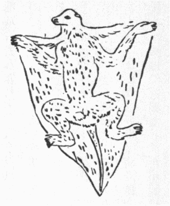
第３図 飛狐猴
漢の東方朔の『十洲記』には南海中の炎洲に風生獣あり、豹に似て青色、大きさ狸（野猫）のごとし、網で捕えて
薪数車を積み焼くに、薪尽きても燃えず灰中に立ち毛も焦げず、
斫っても刺しても入らず、打てば灰嚢のごとし、
鉄槌で数十度打ってようやく死ねど、口を張って風に向ければ暫くして
復活く、石菖蒲でその鼻を
塞げば即死す。その脳を菊花に和し十斤を服せば五百年生き得と。唐の孟の『嶺南異物志』には、この獣常に一杖を持って
指すに、指された鳥獣皆去る能わず、人を見れば杖を捨つ、人この獣を捉えあくまで打てば杖を指し示す、人その杖を取って物を指し欲するところに随わしむと載す。奇怪至極な話だがつらつら考えるにこれはコルゴを誇張したのだ。コルゴ（第三図）英語でフライイング・レムール（飛狐猴）、またフライイング・キャット（飛猫）、「乳母ここにももんがあがと子供いい」というモモンガに似たようだが、全く別類で、モモンガは前後脚の間にのみ張った皮膜ありて樹上から飛び下るを助くるが、コルゴの飛膜は前後脚間に止まらず前脚と頸側、後脚と尾の間にも足趾間にも張られ居る
状蝙蝠に
髣髴たり。だが蝙蝠の翅膜に毛がないと異なり、コルゴの膜は下面ほとんど裸で上面は毛が厚く生え居る。昼は蝙蝠同然樹からぶら下がって睡り、夜は
件の膜を張って樹から樹へ飛び歩き葉と虫を食う。清水の舞台から傘さして飛ぶように無難に飛び下るばかりで、鳥や蝙蝠のごとく一上一下はし得ないから、南方先生の居続け同然数回飛べばどん底へ下り、やむをえず努力して樹梢に昇り、また懲りずまに飛び始めざるを得ず。ただし居続けも勉強すると随分長くやれる。コルゴ先生も今はなかなか上手に飛び、数百ヤードの距離を飛ぶにその距離五分の一だけ下るとは飛んだ飛び上手だ。この獣以前は猴の劣等な狐猴の一属とされたが、追々研究して蝙蝠に縁近いとか、ムグラモチなどと等しく食虫獣だとか議論定まらず。特にコルゴのために皮膜獣なる一類を建てた学者もある。惟うに右述ぶごとくほとんど横に平らに飛び下るから支那で平猴と名づけたので、『十洲記』に南海中の炎洲に産すというも、インド洋中の熱地ジャワ、ボルネオ、スマトラを指したものであろう。現にこれら諸島とマレー半島、シャム、ビルマ、インドに一種を出すがそれに四、五の変種あり。それより耳短く、頭小さく、上前歯大なる一種はルソンに産す。その毛オリヴ色で白き
斑あり猫ほど大きく、尋常の方法では殺し切れぬくらい死にがたい（一八八三年ワリスの『
巫来群島記』一三五頁）のが、平猴の〈大きさ狸（野猫）のごとし、その色青黄にして黒、その文豹のごとし、これを撃っては
倏然として死す。口を以て風に向かえば、
須臾にしてまた活く〉（『本草綱目』五一）てふ記載に合い、昼
臥し夜飛び廻る上に、至って死にがたい誠に怪しいもの故種々の虚談も支那書に載せられたのだ。さて仙人能く飛ぶに合せてその脳を食えば長生すとか、その杖を得れば欲するところ意のごとしとかいい出し、支那人は中風大風（癩病）等を風より起ると見たから、風狸の一名あるこの獣の尿は諸風を治すと信じたのだ。昨今支那にコルゴを産すと聞かぬが、前述の仰鼻猴や、韓愈の文で名高い

など、ありそうもない物が新しく支那で見出されて学者を驚倒させた例多く、支那の生物はまだとくと調査が済まない。したがって予は南支那に一種のコルゴが現存するか、昔棲んだかの証拠がそのうち必ず揚がると確信する。さて話はこれから段々いよいよ面白くなるんだからして、聞きねえ。
（大正九年一月、『太陽』二六ノ一）
『仏本行集経』三三に、仏、
成道して最初に説法すべき人を念じ、
優陀摩子然るべしと
惟うに、一天神来りて彼は七日前に死んだと告ぐ。世尊内心智を
揮い、かの者死して非々想天に生まれ、八万四千大劫の後ここに堕落して飛狸身を受け、諸畜生を害しまた婬し、その報いで餓死して今度は地獄に生まるるはずと知ったとある。『経律異相』三九に、『
毘毘曇婆沙』を引いていわく、昔一国王常に優陀摩子を敬し魚食を施す、この仙人食時ごとに空を飛び王宮に
詣り、王迎えて自ら抱いて金牀上に坐せしめ食を供うるを、仙人食い終って
偈を説き、呪願して飛び去った。しかるに王事故あって他行するに臨み、この仙人気短ければ、王同然に給事
篤くする者なくては大いに怒り、呪詛して王位を失わしめまた殺すだろうと心配の余り、王女に汝我に代りよく供養すべきやと問うに、能くすと答う。因って万端抜かりなきよう言い含めて出で立った。後日食事に仙人飛び来り、王女自ら迎え抱いて金牀上へ坐せしめた。ここでちょっと中入りに申し上ぐる。キリスト教では眼で
視とれたばかりが既に姦婬同然といい、儒書にも宋の華父督が孔父の妻を途に見、目
逆えてこれを送り曰く、美にして
艶なりと、
竹添先生の
箋に、〈およそ女子の美を称うるは顔色を言う、すなわち艶はその光なり、美の
尤なるは、必ず光気ありて人を動かす、三字ついに後世美人を賦して
俑と為す〉とあれば飛び切りの代物だ。それから孔父を攻め殺してその妻を奪い、主君
殤公の怒るを
懼れついにこれを
弑したというから、二教ともに眼ほど性慾を挑発するものなしとしたのだ。しかるに『十善法語』にも見える通り、仏教には細滑というて肌に
触るを最も強く感ずるとす。されば仙人、王女の軟らかな手で抱かれ、すなわち神足を失い、食事済んで飛び去らんとすれど能わず。その
体南方先生外国で十五年仙人暮しで大勉強し、ロンドン大城の
金粟如来これ後身と威張り続け、大いに学者連に
崇められたが、帰朝の際ロンドン大学総長から
貰うた金を船中で飲み尽し、シンガポールへ著きて支那料理を食いたいが文なしの身の上、金田和三郎氏（只今海軍少将か大佐）に打ち明かし少々借り倒して上陸し、十町も過ぎぬ間に天草生まれのへちゃ芸妓を見て曰く、美にして艶なりと、たちまち鼠色の
涎を垂らし、
久米仙人を現じて車より
堕ち掛ったに異ならず。仕方がないから王宮の後園へ歩み入り、修行して王女の細滑を忘れ切り、神足を恢復せんとしたが、ここは御庭先の
栞り門、戸を立てるにも立てられぬ。
象馬車乗の
喧しさに心いよいよ乱れて修行を得ず。地体城中の人民この大仙もし一度でも地を歩まば我ら近く寄りてその足を礼すべきに、毎度飛び来り飛び去るのみで志を遂げぬと
嘆ちいた。それを知りいた仙人一計を案じ、王女を頼み、城中にあまねく告げしめたは、今日に限り大仙王宮より歩み去れば礼拝随意と、聞いて人民大悦し、街路を
浄め、
幡を懸け、香を
焼き、花を飾って歓迎する。その間を
鹿爪らしく歩んで城から遠からぬ林中に入り、神足を修せんとしたが、鳥が鳴き騒いで仙人修行し得ず。すなわち林樹を捨て河辺に到り、その本法を以て神足を修せんとするに水中魚鼈廻転の声が耳に
障る。因って山に上り
惟うらく、我今善法を退失せるは皆衆生に
由る。この返報に世間あらゆる地行、飛行、水性の衆生を一切害し尽すべき動物に生まれ変らんと。この悪誓願を発して死んだところ、従前善法浄行の報いで非想非々想天に生まれ、八万劫の長い間、寂静園中に閑静を楽しんだが、業報尽き
已ってこの地の答波樹林に還り、著翅狸身と
作って身広五十
由旬、両翅各広さ五十由旬、その身量百五十由旬あり、この大身を以て空行水陸衆生を殺し、免るるを得る者なく、のち死して
阿毘地獄に生まれたということじゃ。
『仏本行集経』に、飛狸、『経律異相』に、著翅狸、いずれも優陀摩仙が転生とあれば、同物に相違なく、華南で狸というはタライと呼ぶ野猫で、中橋文相好物のタヌキ（これも北支那や黒竜州に産す）でない。故に支那訳経の飛狸、著翅狸はコルゴの英名フライイング・キャット、飛猫に合う。上にも述べた通り、至極怪しい獣でインドにも産すれば（バルフォールの『印度事彙』二）いよいよ仏典の飛狸はコルゴと考定さる。さて『
僧伽羅刹所集経』一と二に有翅飛鬼、また羅刹有翅とあり、ハーバート・スペンセルが欧州で天魔に翅を
画くは、蝙蝠を怪獣とせるに基づくといえるごとく、インドの羅刹鬼に翅ありとするは幾分蝙蝠に
象ったるべきも、右に引いた経文で見ると、多分はコルゴに根源すというべし。邦俗いわゆる天狗が多少仏経の有翅飛鬼より生ぜるは馬琴の『
烹雑記』に説く所、
理あり。されば天狗は系図上コルゴの孫だ。何に致せ、古来学者を閉口させた平猴をコルゴと定めたは、予の卓見と大天狗の鼻を
蠢かす。
また優陀摩仙が一たび神足を失して、水陸到る処物の声に正念を
擾されたちゅう譚から出たらしいは、この辺で熊野の神が、田辺町より三里足らずの富田の海辺に鎮坐し掛かると、波の音が喧しい、それを
厭うて山へ上ると
松籟絶えず聞えるので「波の音聞かずがための山
籠り、苦は色かへて松風の声」と詠じて、本宮へ宿替えされたてふのだ。
『一話一言』一五にいわく、〈『寿世青編』いわく、伏気に三種眠法あり、病竜眠るにその膝を屈するなり、寒猿眠るにその膝を抱くなり、亀鶴眠るにその膝を
踵くなり〉、今も俗に膝を抱いて眠るを猿子眠りというなりと。日本のを見ぬが熱地の諸猴を親しく見しに、猴ほど夜眼の弱いものはなく、日が暮れれば膝を立てて坐し、頭を膝に押し付け手で抱えて
睡る。人が起すとちょっと面を揚げ、眼を
瞬きしまた
俯ぶき睡る。惟うに日本の猴も同様でこれを猿子眠りというのだろ。
頼光が
土蜘蛛に悩まさるる折、綱、
金時が
宿直する古画等に彼輩この風に居眠る体を画けるを見れば、前に引いた信実の歌などに
深山隠れの
宿直猿とあるは夜を守って平臥せぬ意と見ゆ。眼が見えぬからのみでなく、樹上に夜休むに防寒のためかくして眠るのだろ。ロバート・ショー『高韃靼行記』に一万九千フィートの高地で夜雲に逢うた記事あっていわく、こんな節は
跪いて下坐し、頭を両膝間に
挟むようにして、岸に
凭せ、頭から総身を外套で
洩れなく被い、風強からずば外套内を少し
脹らせ外よりも暖かい空気を呼吸するに便にす、ただし足最も寒き故自身の諸部をなるべく縮める、かくして全夜安眠し得べし、外套だけ被って足を伸ばし
臥ては束の間も眠られぬと。これすなわち猿子眠りだ。予はこれを知らず高山に寒夜平臥して足を不治の難症にしおわったから、記して北荒出征将士の参考に供う。このついでに第四図に示すロリスはもっとも劣等な猴で、南インドとセイロンに産し夜分忍び歩いて虫鳥を食うために至って巨眼だが、昼間眠る態が粋のまた粋たる猿子眠りだ。さて吾輩在外の頃は、いずれの動物園でも熱地産の猴や
鸚哥を不断人工で熱した室に飼ったが、近時はこれを廃止し食物等に注意さえすれば、温帯寒暑の変りに
馴染み、至って健康に暮すという。何事も余り世話焼き致さぬがよいらしい。
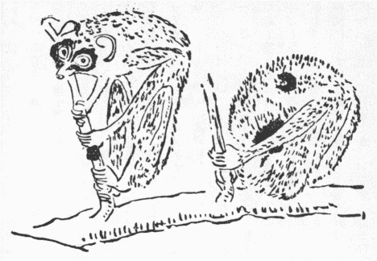
第４図 ロリス
上引、李時珍猴の記載に尻に毛なしとあるが、毛がないばかりでなく、尻の皮硬化して樹岩に坐するに便あり。発春期には陰部とともに脹れ色増す。古ギリシア外色盛行の世には、裸体少年が相撲場の砂上に残した後部の蹟を注意して必ず滅さしめ、わが邦にも「若衆の尻月を見て離れ得ぬ、
念者や
桂男なるらん」など名吟多し（『後撰夷曲集』）。しかるに猴は尻の色が牝牡相恋の一大助たるのだ。本邦の猴は尻の原皮で栗を
剥ぐとて栗むきと呼び、何の義か知らねど紀州でギンガリコと称す。西半球の猴は一同この原皮を欠き、アフリカのマイモン猴は顔と尻が
鮮やかな朱碧二色で
彩られ獣中最美という。
そもそも本篇は発端に断わった通り、読み切りのつもりだったが、人はその乏しきを
憾み、われはその多きに苦しむ。積年集めた猴話の材料牛に汗すべく、いずれあやめと引き煩いながら書き続くる内、概言の第一章のみでも、かように長くなったから、第二章以下は改めて続出とし、ここに元本章の
尻纏めに猴の尻の珍談を申し上げよう。
アリストテレスが
夙く猴を有尾、無尾、狗頭の三類に分ったは当時に取っての大出来で、無尾は猩々、猿猴等、日本の猴等は有尾、さて狗頭猴はアラビアとアフリカに限り生ずる猛性の猴だが、智慧すこぶる深く、古エジプトで神と崇められた。人真似は猴の通性で、『雑譬喩経』に猴が僧の坐禅の真似して樹から落ちて死んだ
咄あり。上杉景勝平素笑わなんだが猴が大名の
擬して
烏帽子を
戴くを見て吹き出したといい、加藤清正は猴が『論語』を註するつもりで塗汚すを見、汝も聖賢を慕うかと笑うた由。パーキンスの『アビシニア住記』一にアラブ人酒で酔わせて狗頭猴を捕える由言い、氏一日読書する側にこの猴坐して
蠅を捉え、またその肩に上りて
入墨した紋を拾わんと
力めおり、氏が喫烟に立った間に氏の椅子に座し膝に書を載せ沈思の体までは
善かったが、一枚一枚
捲り裂きて半巻を無にした所へ氏が帰った。また氏がちょっと立つごとに跡へ坐って
烟管を口にし、氏帰れば至って慎んで返却したは極めて
可笑しかったとある。またいわくすこぶる信ずべき人から聞いたは、猴
曳きが寺の鐘を聴いて如法に身を浄めに行くとて、平生教えある狗頭猴に煮掛けた肉の世話を委ね置くと、初めは火を
弄びながら番したれど、鶏肉熟せるを見て少しずつ盗み食いついに平らげてしまい、今更骨と汁のほかに一物なきを知って
狼狽の末呻吟する、たまたま、
鳶が多く空に舞うを見て自分の尻赤く鶏肉に
擬うに気付き、身を
灰塵中に
転ばして白くし、
越後獅子様に逆立ちこれを久しゅうせるを鳶が望んで灰塚の頂に生肉二塊ありと誤認し、二、三羽下り撃つところを取って羽生えたまま煮え沸く
鍋に押し込むを、向いの楼の上で喫烟しながら始終見届けた人ありと。『嬉遊笑覧』に『
犬筑波集』猿の尻木枯ししらぬ紅葉かな、『
尤の草紙』赤き物猴の尻、『犬子集』
昔々時雨や染めし猿の尻、また丹前能日高川の故事を物語るところになんぼう
畏ろしき物語にて候、猿が尻は真赤なと語りぬとあり。これら皆幼稚の者の昔々を語る趣なり。猿は赤いといわんためまた猿と蟹の古話もあればなり、赤いとはまづかくと言うの訛りたるなり。まづかくは真如これなり、それを丹心丹誠の丹の意にまっかいといえるは偽りなき事なるを、後にその詞を戯れて猿の尻など言い添えて、ついに真ならぬようの事となって今はまっかな
啌という、これは疑いもなく明白なるをまっかというなれど、実は移りて意の表裏したるなるべしと見ゆ。これで予も猿の尻は真赤いな。
（大正九年二月、『太陽』二六ノ二）
概言中に述べた平猴に似た物が明の黄省曾の『西洋朝貢典録』中と『淵鑑類函』二三四に記載さる。その文異同ある故
両つながら参酌して書くと、〈
阿魯国一名唖魯、西南の海中にあり、その国南は大山、北は大海、西は
蘇門荅剌国界、国語婚喪等の事
爪哇と相同じ、山に飛虎を出す、その状猫のごとく、灰色にして肉翅、蝙蝠のごとく、能く走り能く飛ぶ、これを獲ればすなわち死す〉。スマトラの東にあるなり、西南でなくて東南海中にある蘭領アル島にほかならじ。いわゆる飛虎はアル島に産するベタウルスの一種らしい。これはカンガルーなどと同じく、袋獣類の物で平猴（コルゴ）と縁がない。
それから前引の「波の音聞かずがための山籠り苦は色かへて松風の声」てふ歌は、熊野の神さえ海辺で波、山中で松風の音が耳に障る。いわんや人間万事思うままに行くものかという
訓えの神詠とかで、今も紀州の人は不運な目に逢うごとにこれを引いて諦めるが、熊野猿ちゅう
諺通りよほどまずい神詠だ。さりとて随分名高かった証拠は近松門左の戯曲『薩摩歌』中巻お蘭比丘尼の
詞に「あのおしゃんす事わいの、苦は色替ゆる松風通り、風の吹くように、身にも染まぬ一時恋」。半二と加作の『
伊賀越道中双六』岡崎の段の初めに「世の中の、苦は色かゆる松風の、音も淋しき冬空や」などある。全体この神詠なるもの
何時頃から文献に見え出したのか、読者諸君の教えを乞う。
『
水経注』巻三三に広渓峡に手長猿多きもその北岸には決してこれを産せぬとある。何のへんてつもない記事と看過しいたところ、たまたま『大英百科全書』巻二二フォルツ博士の実験談を引いて、スマトラ島の諸地にシャマンとウォーウォーと二種の手長猴雑居し、パレンバン地方でも山地では雑居す。しかるにこの地方にあるレマタン川に限り、彼らが容易に飛び越え得るほど狭き上流までも西岸にシャマン、東岸にウォーウォー棲んで
相雑わる事なきは希代だ。前者は一声、後者は二声ずつ鳴くからこれを捕え見ずともこの界別はよく判るというを読んで、魏帝が長江の南北を限れるを認め嘆ぜしを思い出し、『水経注』の説もしかと事実に基づいたものと知った。
フンボルトの『回帰線内亜米利加旅行自談』に、所により鰐や鮫が人を犯すと犯さざるの異なる由を述べ、猴も同様でオリノコやアマゾン河辺のインデアン人は、同一種の猴ながらある島に住むはよく人に
懐き馴れるが、その近所の大陸に住む奴は捕えらるるや否や、甚だしく怖れまた
嗔ってたちまち死するを熟知する故、猿取りに無駄骨を折らぬ。どうも地勢が違うばかりでかように性質が異なると説き去りがたいとあるが、定めて食物とか物の乾湿とか雑多の原因がある事と惟わる。したがってわが邦の猴舞わしが、四国猴は芸を仕込むに良いの、熊野猴は生まれ付きが荒いのというも年来の経験で根拠ある説らしい。
『
連珠合璧』上に猿とあらば梢をつたうとあり、俗諺にも猴も木から落ちるというて、どの猴も必ず楽に木を伝い得るよう心得た人が多い。しかしワリスの『
巫来群島記』（一八八三年板、一三三頁）に、スマトラに多い体長く
痩せ、尾甚だ長いセムノビテクス属の猴二種は、随分大胆で土人を
糸瓜とも
念わず、しかるに予が近づき
瞰めると一、二分間予を凝視した
後逃げ去るのが面白い。一樹の枝より少し低い他の樹の枝へ飛び下るに、一の大将分の奴が無造作に飛ぶを見て他の輩が多少
慄きながら随い飛べど、最後の一、二疋は他の輩の影見えぬまで決心が出来ず、今は全く友達にはぐれると気が付き
捨鉢になって身を投げ、しばしば細長い枝に身を打ち付け廻った後、地上へドッサリ堕つる
睹て
可笑しさに堪えなんだとあるから、猴の木伝いもなかなか容易でないと見える。
世に猴智慧というは『甲子夜話』続二一に、四国の猴は余国よりは小さくして舞伎を教えて能く習う、因って捕え他国へも出して利を得るとぞ。この猴に器用なると不器用なると二品あり、不器用なるは芸を
為す事能わざる故選びに念入る事の由、その選ぶ術は、まず一人を
容るべきほどの戸棚を造り、戸を
閉める時自ずから栓下りて開けざるごとくして中に食物を置き、猴多き山に持ち往きて人まずその内に入って食物を食い出づるを、猴望み見て人の居ざるを待って入って食物に
就く、不器用なる猴は食う時戸を閉づる事を知らず、故に人来ればたちまち逃れて山中に走る、器用なるは戸棚に入り食せんとする時、人の来るを
慮りわざと戸を閉づ。兼ねてその
機関を作りたるもの故すなわち栓ありて
闢けず、ついに人に捕えらると、ここを以て智不智を撰ぶとぞ。いわゆる猴智慧なるかなと見ゆ。未熟の智慧を振うて失策を取るを猴智慧といい始めたらしい。されば仏経にしばしば猴を愚物とし、『百喩経』下に猴大人に打たれ
奈何ともする能わずかえって小児を
怨むとあり。また猴が一粒の豆を落せるを拾わんとてことごとく手中の豆を捨て鶏鴨に食われた話を出す。猴は毎々そうするか否を知らぬが、予かつて庭に遊ぶ蟹に一片の香の物を投ぐると走り寄りて右の
螫でこれを執る。また一片を投ぐると左の螫で執る。更に一片を投ぐると右の手に持てるを捨ててこれを執り、今一つ投ぐると左手に挟んだのを捨てて新来の一片を執る。幾度も投げ与うるに毎度かくのごとくし、ついに最後の二片を持ちて穴に入ったそのまままた出て前来の諸片を採らず、全く忘れしまったようだった。最後の二片で満足するほどなら幾度も拾い換えるに及ばぬというところに気付かぬは蟹根性とでも名づくべきか。だが世間にこんな根性の人が少なくない。『僧祇律』に群猴月影水に映るを見、月今井に落ちた、世界に月なしとは大変だ助けにゃならぬと評定して、その一疋が樹の枝を捉え、次々の猴が各他の猴の尾を執りて連なり下る重みで枝折れ猴ども一同水に陥った。天神これを見て「なべて世の愚者が衆愚を導びかば、井戸の月救う猴のごと滅ぶ」コラサイと唄うたと
出づ（英訳シーフネル『
西蔵譚』三五三頁）。これに
謝霊運『名山記』に〈
下り飲み百臂相
聯なる〉とあるを調合して、和漢に多き猿猴月を捉えんとする図が出来たのであろう。『法句譬喩経』三にいわく、愚なる猴王五百猴を率いて大海辺に至り、風が
沫を吹き
聚めて高さ数百丈となるを見、海中に雪山あり、そのうち快楽、甘果
恣に口にすと聞いたが今日始めて見る、われまず往き視て果して楽しくば還らじ、楽しからずば来って汝らに告ぐべしとて、
聚沫中に跳り込んで死んだと知らぬ猿ども、これはよほど楽しい所ゆえ留まって還らずと合点し、一々飛び入りて溺死したと。熱地の猴故雪山を楽土と心得たのだ。猿が猴智慧でその身を
喪うた例は支那にもあり。『北史』に高昂の母が児を浴せしめんと沸かした湯を婢が置き去った後、猿が綱を
外し児を
鼎中に投じ
爛れ死なしめたので、母が薪を村外に積ましめ、その婢と猿を焚殺したとある（『類函』四三一）。
一九〇八年板英国科学士会員ペッチグリウの『造化の意匠』巻二に、猴の心性について汎論した一章あって煩と簡との中を得居るからその大略を述べよう。すなわち猴類は人間に実用された事少しもなく、いまだかつて木を
挽き、水を汲むなど、その開進に必要なる何らの役目を務めず、ただ時々飼われて娯楽の具に備わるの一途あるのみ。それすら本性不実で
悪戯を好み、しばしば人に
咬み付く故十分愛玩するに
勝えず。されどその心性人に類せる点多きは真に驚嘆すべし、ダーウィンは猴の情誼厚きを
讃め、あるアメリカの猴がその子を苦しむる蠅を払うに苦辛し、手長猿が水流中に子の顔を洗うを例示し、北アフリカの某々種の猴どもの牝はその子を喪うごとに必ず憂死し、猴の孤児は他の牝牡の猴必ずこれを養い取って愛撫すといった。ジョンソン説に、手長猿は同類甚だ相愛すれど一たび死ねば構わぬに反し、氏が銃殺した猩々の屍を他の猩々どもが運び去ったと。ある人『ネーチュル』雑誌へ出せしは、その園中に放ち飼える手長猿の一牡児、木から堕ちて腕節外れると、他の猿一同厚く世話焼く、特に篤志だったはその児に何の縁なき一老牝で、毎日くれた
甘蕉実を自ら食わずにまず病猿に薦めた。一つの猿が怖れ、痛み、もしくは憂いて
号ぶ時は一同走り往きてこれを抱え慰めたと。キャプテーン・クローかつて航海せし船に種も大きさも異なる数猴を積む、中に一種小さくて温良に、人に愛さるるも附け上がらず
好く嬉戯するものありて、衆猴これを一家の秘蔵子のごとく愛したが、一朝この小猴病み付いてより衆猴以前に倍してこれを愛し、競うてこれを慰むるに
力め、各
旨い物を
竊んで少しも自ら味わわず病猴に与え、また
徐かにこれを抱いて自分らの胸に
擁え、母が子に対するごとく叫んだが、小猴は病悩に耐えず、悲しんで予の顔を眺め、予に援苦を求むるふりして嬰児のように鳴いた。かくて人も猴も出来る限り介抱に手を尽したが養生相叶わず、久しからぬ内に小猴は死んだという。またサー・ゼームス・マルクムも東インド産の二猴を伴れて航海中、一猴過って海に陥るを救わんとて他の一猴その身に
絡うた縄を投げたが短くて及ばず、水夫が長い縄を投げると今落ちた猴たちまちこれを執え引き揚げられた。ジョンソン大尉インドバハール地方で猴群に
愕かされてその馬騒ぎ
逸れし時、鉄砲を持ち出して短距離から一猴を
射ち
中てしに、即時予に飛び掛かるごとく樹の最下枝に走り降り、たちまち止って血をあびたる場所を探り
抓んで予に示した。その状今に至って眼前にあり、爾来また猴を射った事なし、予幕中に入りて一行にこの事を語りおわらぬ内、厩卒来りてかの猴死んだと告ぐ、因って
尸を求めしむるに他の猴ども、その屍を持ち去って一疋も残らずと。
熊楠いわく、故ロメーンズ説に猴類の標本はどうしても十分集まらず、これはその負傷から死に至る間の惨状人をして顔を
背けしむる事甚だしきより、誰もこれを銃殺するを好まぬからだと。『三国志』に名高い呉に使して君命を
辱めなんだ蜀漢の
 芝
芝は、才文武を兼ねた偉物だったが、黒猿子を抱いて樹上にあるを
弩を引いて射て母に中てしにその子ために
箭を抜き、木葉を巻きてその
創を
塞ぐ、芝嘆じてわれ物の性に
違えり、それまさに死せんとすと、すなわち弩を水中に投じたがやがて
俄に死んだという。南唐の李後主青竜山に猟せし時、一牝猴網に触れ主を見て涙雨下し
稽
してその腹を指ざし示す。後主人をして守らしむるにその夕二子を生んだ。還って大理寺に幸し囚繋を録するに、一婦死刑に
中れるが妊娠中ゆえ獄中に留め置くと、いくばくならず二子を生んだ。後主猴の事に感じ死刑を減じ流罪に
止めた（『類函』四三二）。
日本にも、櫛笥殿北山大原の領地で銃もて大牝猴を
覘うに、猴腹を示し合掌せしにかかわらず打ち殺し、その
祟りで煩い死んだと伝う（『新著聞集』報仇篇）。今年元日の『大正日々』紙に、越前の敦賀郡愛癸村字刀根の
気比神社は浪花節の勇士岩見重太郎が
狒々を平らげし処という。今も祭礼に
抽籤もて一人の娘を撰み
櫃に入れ、若者
舁ぎ行きて神前に供う。供わった娘は後日良縁を得とて競うてこれに中らんと望む。この村へ毎年二、三百疋の猴来り作物を荒すを村人包囲して捕え子猿を売る。孕んだ猴は腹を指さし命を乞うとあった。またしばしば熊野の猟師に聞いたは、猴に銃を向けると合掌して助命を乞う事多しと。これを
法螺譚とけなし去らんとする人少なからぬが、一概にそうも言えぬ。数年前予が今この文を草し居る書斎に対して住みいた芸妓置屋の女将が愛翫したカジカ蛙が合掌して死んだは信心の厚い至りと
喋々して、茶碗の水ででも
沾したものか、川穀（ズズダマ）大の涙を落し坊主に読経させて厚く葬ったと聞いた。善男信士輩、
成湯の徳は禽獣に及びこの女将の仁は蛙を
霑おすと評判で大挙して弔いに往ったは事実一抔
啖されたので、予が多く飼うカジカ蛙が水に半ば
泛んで死ぬるを見るに皆必ず手を合せて居る。これはこの蛙の体格と死に際の動作がしからしむるので念仏でも信心でもない。チャーレス・ニウフェルドの『カリーファの一囚人』（一八九九年板）に、著者が獄中にあって頭上で夥しく砲丸破裂の
憂目を見た実験談を述べて、その時獄中の人一斉に大腹痛大下痢を催したと書いた。われわれ幼時厳しく
叱られ
驚愕措く所を知らぬ時も全くその通りだった。因って想うに猴も人も筋肉の構造上から鉄砲など向けらるると自ずと
如上の振る舞いをするので、最初は驚怖が合掌を起し、追々恐怖が畏敬に移り変って合掌する事となったので、身持ちの牝猴も女も、恐怖極まる時は思わず識らず指が腹に向くので、さもなき牡猴や男にも幾分その傾向を具え居るので、時として孕婦の真似するよう見えるのでなかろうか。
ペッチグリウ博士続けていわく、予かつて高等哺乳動物の心室と心耳の動作を精測したき事あって一疋の猴の躯を
嚢に入れてひっ掻かるるを防ぎ、これにクロロホルムを施すに猴あたかも予の目的を洞察せるごとく、悲しみ気遣いながら抵抗せず、予の
為す
任に
順いしは
転た予をして
惻隠の情に堪えざらしめた。その行い小児に強いられてやむをえず麻薬を施さしむるに異ならず、爾来どんな事あるも予は再び猴に麻薬を強うるを欲せず。またある時ロンドンの動物園で飼いいた黒猩（チンパンジー）が
殊のほか人に近い挙止を現ずるを目撃した。それは若い牝だったが、至って心やすい番人よりその大好物なる米と炙肉汁の混ぜ物を受け
徐かに吸いおわり、右手指でその入れ物ブリキ
缶の底に残った米を拾い食うた後、その缶を持って遊ぼうとするを番人たって戻せと命じた。そこで黒猩
暴かにすね出し、空缶を番人に投げ付け、
牀に飛び上り、毛布で全身を隠す、その
体気まま育ちの小児に異ならなんだ。ロメーンズの記に、牝猩々が食後空缶を
倒に頭に
冠り観客が見て笑うを楽しみとした事あり。サヴェージ博士は黒猩時に遊楽のみのために群集し、棒で板を打って音を立つ事ありというた。猴どもが動物園内で軽業を面白
可笑しく楽しむは皆人の知るところで、機嫌好く遊ぶかと見ればたちまちムキになって相闘い、また毎度人間同様の悪戯をなす。アンドリウ・スミス男喜望峰で見たは、一士官しばしばある狗頭猴を悩ます、ある日曜日その士盛装して来るを見、土穴に水を注ぎ泥となし、
俄に投げ掛けてその服を汚し傍人を大笑せしめ、爾後その士を見るごとに大得色を現じた由。
猴は極めて奇物を好む。鏡底に自分の影映るを見て他の猴と心得、急にその裏を覗き見る。後、その真にあらざるを知り大いに
誑かされしを怒る。また弁別力に富む。レンゲルいわく、一度刃物で
怪我した猴は二度とこれに
触らず、あるいは仔細に注意してこれを執る。砂糖と蜂を一緒に包んだのを受けて蜂に
螫されたら、その後かかる包みを開く前に必ず耳に近付けて蜂の有無を聞き分ける。一度ゆで卵を取り落して
壊した後は、卵を得るごとに堅い物で打ち欠き指もてその殻を
剥ぐ。また機巧あり、ベルトが
睹た尾長猴はいかにこんがらがった鎖をも
手迅く解き戻し、あるいは旨く
鞦韆を御して遠い物を手に取り、また己れを愛撫するに乗じてその持ち物を
掏った。キュヴィエーが飼った猩々は椅子を持ち歩いてその上に立ち、思うままに懸け金をはずした。レンゲルはある猴は
梃の
［＃「梃の」は底本では「挺の」］用を心得て
長持の
蓋を棒でこじあけたというた。ヘーズン一猴を飼いしに、その
籠の上に垂れた木の枝に上らんと望めど、籠の戸の上端に
攀じ登って始めて達し得。しかるにこの戸を開けばたちまち自ずから閉ずる
製ゆえ何ともならず。その猴取って置きの智慧を
揮い、戸を開いてその上端に厚き毛氈を打ち掛け、戸の返り閉づるを
拒ぎ、やすやすと目的を遂げたそうだ。シップは喜望峰狗頭猴、下より来る敵を石などを集め
抛下して防ぐといい、ダムピエート・ウェーファーは猴が石で
牡蠣を叩き開くを記す。多くの下等動物や小児や蛮民同様、猴は多く真似をする。皆人の熟知する通り。行商人、炎天に赤帽の荷を
担い歩み
憊れて猴多き樹下に止まり、荷箱を開いて赤帽一つ取り出し
冒って眠るを見た猴ども、樹より降りて一々赤帽を冒り樹に登る。その人
寤めて多くの帽失えるを知り失望してその帽を地に
抛つと、衆猴その真似してことごとく盗むところの帽を投下し、商人測らず失うところを残らず取り還したてふ話があると。
熊楠いわく、この譚は回教国の物らしいが、類話は古く仏典に出て居る。過去世に
伽奢国王
梵施と
拘薩羅国王長生と父祖以来怨仇たり。梵施王象馬歩車の四兵を以て長生王を伐ち戦敗れて
生捕られしを長生王赦して帰国せしめた、暫くして梵施王また兵を起して長生王を伐ち敗り、長生王その
后と深山無人の処に隠れ、琴を学んで無上に上達し諸村を徘徊して乞食す。梵施王の第一大臣この夫婦を招き音楽を聴くに
未曾有にうまいから、乞食をやめさせ自邸に住ましめ扶持して琴を指南せしむ。時に長生王の后臨月に近付き夫に語るは、
何卒朝日初めて出る時
好き
幃帳内に妾を臥せしめ、四つ辻で象馬歩車の四兵の闘う処を見せ、闘いに用いた利刀の洗汁を飲ませて欲しいと。王それは出来ぬ相談だ、昔王位にあった時はともかく、かく落ちぶれて暮し兼ねるに「寝ていて戦争を眺めたい」などは思いも寄らぬというと、后それが出来ずば子を生まずに死ぬとせがむ。折から大臣に招かれ琴を
弾くにややもすれば調子合わず、何か心配があるのかと推問されて事情を語る。その時自分夫婦は腹からの乞食でなく実は拘薩羅国の王と后だと打ち明けたらしい。大臣これを
憐み望みの通り実行させて刀の洗汁を后に飲ましむ。さて生まれた男児名は長摩納、この子
顔貌殊特で豪貴の人相を具う。かの大臣これ後日聖主となり亡国を復興する人物と、后に向い祝辞を述べ、家人を戒めこの語を洩らさば
誅戮すべしというた。長摩納ようやく成人して梵施王の諸大臣や富人を
勧進し施財を得て父母の貧苦を救う。梵施王聞き及んで長生王を死刑に処した。長摩納母を伴って他国に
奔り、琴を修業しまた乞食して梵施王の城下へ来た。王その長生王の子たるを知らず、召して深宮に入れその妙技に感じ寵愛自分の子のごとし。時に梵施王の后
摩尼珠を失い、我が所は王と長摩納のほか入る者なきにこの珠をなくしたは不審という。王、長摩納を呼び汝珠を取ったかと問うに、全く王の太子、王の首相、国中第一の長者、第一の遊君の四人と共謀して取ったと答う。王すなわち五人の者どもを禁獄したが容易に裁判済まず。かれこれするうち賊あり、
私かに長摩納に向い、后宮へ出入するは王と后と汝三人に限るが、そのほかに后宮内を歩き廻る者がないかと尋ぬるに、猴一疋ありと答う。賊すなわち王に
詣り請うて、女人の飾具
瓔珞を種々出し、多く猴を集めこれを
著けて宮内に置くと、先から宮中にいた猴これを見て劣らじと
偸んだ珠を
佩びて立ち出づるを賊が捕えて王に渡した。王すなわち長摩納を呼び汝珠を取らぬに何故取ったと言うたかと問うと、
某実に盗まざれど王と后と某のほか宮に入る者なきに盗まぬといったところで拷問は差し当り免れぬ。太子は王の愛重厚ければ珠くらいの事で殺されじ、首相は智者ゆえ何とか珠を尋ね
中つべし、第一長者は最も財宝に富めばすいた珠を奉り得べく、第一遊君は多人が心を掛くるから日頃の思いを晴らしもらうはこの時と、必ず珠を償う者あるべしと考えてこの四人を同謀と虚言したと答えたので、王その智慧を感じますます鍾愛した。ある日王、兵衆を随えず長摩納に車を御せしめ、ただ二人深山に入って猟し、王疲れて長摩納の膝を枕に眠った。長摩納父の仇を復すはこの時と利剣を抜いて王の首に擬したが、父王平生人間はただ信義を貴ぶべしと教えたるを思い出し、
恚りを
息め剣を納めた時
俄然王驚き
寤めた。身体流汗毛髪皆立ち居る様子、その子細を問うと我今夢に若者あり、右手剣を執り、左手わが髪を
撮み、刀を我が頸に擬し、我は長生王の太子、亡父のために復仇するぞというを聞き、夢中ながら悔いて自ら責めたと語る。御者王に
白す、還って安眠せよ、また驚くなかれ、長生王の子長摩納実は
某なりと。王命じて車を御せしめ王宮に還り御者の罪を議するに、まず手足を
截ちて後殺すべしの、その皮を生剥ぎにすべしの、火で
炙った矢で射るべしのと諸大臣が申す。王この御者は長生王の太子なり。その復仇を中止して我を
免したればこそ我生き居るなれ、
卿ら悪意を生ぜざれとして一女を長摩納に
妻わせ
拘薩羅国王に立てたとある（『出曜経』十一、『四分律』四三を参酌す）。従来誰も気付かぬようだが、この物語のうち長摩納に剣を擬せられ居る梵施王がその通り夢に見たところは、「垂仁紀」に天皇
狭穂姫皇后の膝を枕に
寝ね小蛇御頸に
繞うと夢みたまいし段に似、長摩納が王を殺さんとして果さなんだところは、『吉野拾遺』、宇野熊王が
楠正儀を討ち果せなんだ話に類す。
而して猴が他の諸猴の真似して
偸んだ珠を佩び現われたところは上述赤帽の行商人の譚に近い。
ペッチグリューまた曰く、猴は人真似に止まらず、また究察力を有す。ある褐色カプシン猴はよく
竈箒の柄を
捻じ入れまた捻じ戻した。最初柄の孔に合わぬ端を孔に当て正しく捻じ廻したがはいらぬを見て、他の端に振り替え孔に当て正しく捻じ初めた。前二手で柄を持ち定めまた廻すは甚だ困難ゆえ、ついに一の後手（猴は足なく前後四手あり）で箒を持ち
螺旋を合わすに並みならぬ根気を要したが、やっと合せて速やかに捻じ入れしまった。もっとも驚き入ったは、いかほど螺旋を合わし損うても二度と柄の孔に合わぬ端を孔に当てなんだのと、右から左へのみ捻じ廻した事だ。一度捻じ入れて直ちに捻じ離し、二度めは初度より
易く幾度も行うた。かくて随分巧者になったところでこれをやめて他の遊びに掛った。何の必要もなき事にかくまで辛苦したは驚くほかなく、一たびやり掛けた事はいかな難件をも仕遂げるが面白いと見ゆ。これ人間のほかに見ぬところである。誰も見て居ると知らずにやったのだから讃められたくてでなく、全く
為さんと欲したところを為し遂げんとの望みに出たのだ。この猴またやすやすと窓隠しを開閉するを覚え楽しみ、螺旋三つまで重ねて留めた鈴の手を皆捻じ戻して解いた。この褐色カプシン猴は猴類でもっとも
睿智のものと言うべく、野生のままでは大いにその睿智と模倣力を揮うべき事物に接せず、したがってやや低能なるも、
人間に棲み、器具に近づくに及んですこぶるこれを揮うと見ゆ。かくてこの猴夜分毛布中に臥し、人のごとく物を
抛げ、物を取り寄せ杖で他を打ち、
鎚で栗を破り、
梃で箱の
蓋を開き、棒をへし折り、毛箒の柄の螺旋を捻じ入れ捻じ戻し、握手を交え、
燭に点火してその燃ゆるを守り、自分の頭に暖灰を
撒く。けだしこの猴の脳裏に本来伏在せる睿智が人間に接して興起したので、他の諸家畜とても同様の例多し。元来猴は常に飼われず、故にその人に接近するは永続せず、他の諸畜より遥かに短し。しかるに上述のごとき諸例あるを見れば、猴類が
頓智に富みその境涯に迎合する力大なるを知るべし。しかしながら猴と人の智力に大懸隔あり、質においても量においても猴の智慧は人よりも甚だ諸家畜、
就中犬と象に近きを見ると。
以上ペッチグリウが挙げた諸例は科学者が審判して事実と認めたもので、その多くはロメーンズの『動物の智慧』から採り居る。この他ウォータートンの博物論文、バクランドの『博物奇談』、ジャージンの『博物文庫』巻二七、カッセル出版『猴類博物学』と『猴史』等に猴の話多い中に虚誕も少なからぬようだ。
東洋の書籍にも猴の珍談随分多いが、詰まらない嘘その半ば以上を占めるが、また西人が気付かぬ実事も少なからず載りたれば、十分
稽査に値いする。例せば『類聚名物考』に猴大根を食わしめてよし、またカヤの実を食すれば甚だ
験あり、猴舞わしの家常に用ゆ、甚だ蟹の殻
并びに手の
螫を嫌うなりとあるなど経験に拠ったのであろう。ボールの『印度藪榛生活』にインドの海辺で猴好んで蟹を採り食う由載せ、ビルマのシノモルグスは蟹を専食する猴だ。熊野の勝浦などで、以前は猴が磯に群集し蟹を採り食うに石でその殻を打ち破った。しばしば螫で
鉗まれ叫喚の声耳に
喧しかったと古老から聞いた。しかるに予幼時
直隣りの家にお徳という牝猴あり。紙に蟹を包み与えると
饅頭と思い
戴き、開き食わんとして蟹出づるに仰天し騒ぎ逃げ廻る事夥し。その後誰が紙包みの饅頭を遣わしても必ず耳に近づけ、蟹の足音せぬか聞き定めた後初めて開いた。『
醒睡笑』に、海辺の者山家に聟を持ち、
蛸と
辛螺と
蛤を贈りしを、
山賤輩何物と知らず村僧に問うと、竜王の陽物、鬼の拳、手頃の礫じゃと教えたとある通り、
件の牝猴幼くて捕われ蟹を見た事なき故怖れたのだ。現に予の家に飼う牝鶏は、始め
蚯蚓を与うるも逃げて食わなんだが、昨今は喜んで食う。それから『皇都午睡』初篇中巻にいわく、
岐蘇の猿酒は以前信州の俳友より到来して呑みたるが、こは深山の木の
股、節穴などの中に猿秋の木実を拾い取り運び置きたるが、雨露の
雫に熟し腐るを山賤見出して持ち返り、麻袋へ入れ搾りし物にて黒く濃くして味渋みに甘きを兼ねていかさま仙薬ともいうべき物なりと、熊野にも
稀にありと聞けど海外に似た例をまだ承らぬが、予の「酒泉の話」（大正六年『日本及日本人』春季拡大号）に述べた通り、樹竹の幹などに人手を借りず酒様の物が出来る例少なからず予の手許に標本が集り居る。由って推し考うるに、獣類が蓄えた果物もしくは食べ残しが
瀦って
旨く醗酵するはあり得る事だ。
猴類は人に多く似るものほど鬱性に富み、智力増すほど快活を減ずとフンボルトは説いた。賢人憂苦多く
阿房は常に飛び廻るようなものか。ただしかかる断定は野生の猴を多く見て始めて下すべく、人手に入れたもののみを観察して為し得べきでない。『奥羽観跡聞老志』九に五葉山の山王神は猴を使物として毎年六月十五日猴集まって登山すとあり。紀州の白崎では、以前榕実熟する時、猴これを採りに群集し、田辺附近の竜神山にも、千疋猴とて、夥しき猴の団体を見た事あるも、近年一向なし。猴ごとき本来群居するものの性質行為を研究するは、是非ともその野生群居の処にせにゃならぬに、そんな所は本邦で乏しくなった。支那にも千疋猴あった例、程伯淳、山に遊んで猴一疋も見えず、山僧より〈晏元献南に来て
猴野に満つ〉と聞き、戯れに一絶を
為って曰く、〈
聞説猴性すこぶる
霊し、相車来ればすなわち満山に迎う、騾に
鞭ちてここに到れば何ぞかつて見ん、始めて覚る
毛虫にもまた世情〉。猴までも貧人を軽んずと苦笑したのだ。
ベーカーの『アビシニアのナイル諸源流』十章にいわく、十月に入りて地全く乾けば水を
覓むる狗頭猴の団体極めて夥しく河に赴き、
蔭った岸を蔽える灌木の
漿果を食うため滞留す、彼らの挙止を観るは甚だ面白し、まず大きな牡猴がいかめしく緩歩し老若の大群随い行くに、児猴は母の背に
跨がり、あるいは後肢を伸ばして
覆むき臥し、前手で母の背毛を握って負われ居る。眼疾き若猴が漿果多き木を見付け
貪り食うを見るや否や、上猴どもわれ一と駈け付けてこれを争う、所へ大猿来り、あるいは打ちあるいは毛を引き、脱隊者をばあるいは尻を
咬みあるいは尾を執って引き戻しおし入れ振り舞わす、かくて暫時の間に混雑を整理し、自ら樹下に坐し、静かに漿果を味わう。この狗頭猴は夥しく音声を変える、けだし言語の用を為すらしく、聞いて居ると警を告げるとか、注意を惹くとか分って来た。例せば予が樹蔭に
匿れて窺うを見付け何物たるを
審かにせぬ時、特異の叫びをなして予を叫び出したと。パーキンスの『アビシニア住記』一にも狗頭猴の記事ありいわく、この猴の怜悧なる事人を驚かす、毎群酋長ありて衆猴黙従す、戦闘、
征掠、野荒し等に定法あり、規律至って正しく用心極めて深し、その住居は多く
懸崖の
拆けたる間にあり、牝牡老若の猴の一部族かかる山村より下るに、獅子のごとき
鬣で肩を覆える老猴ども前に立ち、
頃合の岩ごとに上って前途を見定む、また隊側に斥候たるあり、隊後に
殿するあり、いずれも用意極めて周到、時々声を張り上げて本隊の凡衆を整え敵近づくを告ぐ、その折々に随って音色確かに異なり、聞き馴れた人は何事を知らせ居ると判るよう覚ゆ。けだしその本隊は牝猴と事馴れぬ牡と少弱輩より成り、母は児を背負う、先達猴の威容堂々と進むに打って変り、本隊の猴ども不規律甚だしく、千鳥足で
囀り散らし何の考えもなくただただ斥候の用心深きを
憑んで行くものと見ゆ、若猴数疋果を採らんとて
後るれば殿士来って追い進ましむ。母猴は子を乳せんとてちょっと立ち止まり、また時を浪費せじと食事しつつ毛を
理める。他の若き牝猴は嫉妬よりか嘲笑的に眺められた返報にか、他の牝猴に醜き口を突き向け、甚だしき怒声を発してその
脛や尾を
牽き、また
臀を咬むと相手またこれに返報し、
姫御前に不似合の大立ち廻りを演ずるを酋長ら
吠え飛ばして鎮静す。一声警を告ぐれば一同身構えして立ち止まり、調子異なる他の一声を聞いて進み始む。既に畑に到れば斥候ら高地に上って四望し、その他はすこぶる
疾く糧を集め、
頬嚢に溢るるばかり詰め込んだ後多くの穂を脇に
挟む。予しばしば
観しところ斥候は始終番し続け少しも自ら集めず、因って退陣事終って一同の所獲を
頒つと察す。彼らまた水を求むるに
敏く、沙中水もっとも多き所を速やかに発見し、手で
沙を掘る事人のごとく、水深けば相互交代す、その住居は岩の
拆けた間にあって雨に打たれず他の諸動物が近づき得ざる高処においてす。ただし豹はほとんど狗頭猴ほどよく攀じ登ればその大敵で、時にこれを襲うあれば大叫喚を起す、土人いわく、豹は成長せる猴を襲う事稀に時々児猿を捉うと。この猴力強く動作
捷く牙固ければ、敵として極めて
懼るべきも、幸いにその働き自身を護るに止まり進んで他を撃たず、その力ほど闘志多かったら、二、三百猴一組になって来るが常事ゆえ、土人の外出は至難で小童の代りに武装した大人隊に畑を番せしめにゃならぬはずだ。しかし予はしばしばその犬に立ち掛かるを目撃し、また路上や林中で一人歩く婦女を撃つ由を聞いた。一度女人が狗頭猴に厳しく襲われ、幸いに行客に救われしも数日後死んだと聞いた事あると。
（大正九年五月、『太陽』二六ノ五）
さきに猴酒の事海外に例あるを聞かぬと書いたは千慮の一失で、『嬉遊笑覧』十上に『秋坪新語』忠州山州黒猿
善く酒を
醸す事を載す。※
［＃「けものへん＋胡」、U+7322、72-4］※
［＃「けものへん＋孫」、U+733B、72-4］酒といえり、みさごずしに対すべしとあれば海外またその話ありだ。なお念のため六月発行『ノーツ・エンド・キーリス』十二輯六巻二九五頁へ和漢のほかに猴酒記事の例ありやと問いを出し置いたが、博識自慢の読者どもから今にこれというほどの答えが出ず。唯一のエフ・ゴルドン・ロー氏の教示に、猴酒は一向聞かぬが英語で猴の
麪包（モンキース・ブレッド）というのがある。バオバブ樹の実を
指す、またピーター・シンブルの話に猴吸い（サッキング・ゼ・モンキー）といえるは、
椰子を割って汁を去りその跡へラム酒を入れて呑むをもいえば、
樽に
藁を
挿し込んで酒を引き垂らすをもいう。俗にこれを猴のポンプとも名づくとあってまず猴が酒を作る話は日本と支那のほかにないらしい。
件のバオバブ一名猴の麪包の木はマレー群島の名菓ジュリアンと同じく、わが邦の
梧桐の類に近きボムバ科に属し、アフリカの原産だが今はインドにも自生す。世界中最大の木の随一でその幹至って低いが周回七十
乃至九十フィートのものなり。フンボルトその一つを測量して五千百五十年を経たはずと断定した。その樹皮と葉を駆虫剤とし、葉を乾かして痢病に用い、殊に汗を減ずるに使い、その木を網の浮きとするなど、すこぶる多用な木だが、一番珍重さるるはその実で外部木質、内に少し
酸く冷やかな軟肉ありてゴム様に粘る。その大きさ
瓢のごとし。生食してすこぶる旨く、その汁を搾って砂糖を和し飲めば
瘟疫に特効あり。エジプト人はその肉を乾かし水に和し飲んで下痢を止むとあるから（『大英百科全書』巻三、リンドレイの『植物界』第三板三六一頁、バルフォールの『印度事彙』第三板一巻、二二および二七六頁）、猴麪包の功遥かに存否曖昧の猴酒に
優る。それと比較にならねどわが邦にもサルナシという菓あり。猫が好くマタタビと同属の
攀緑灌木で葉が梨に似るから山梨とも呼ぶ。甲斐の山梨郡はこの物に縁あっての名か。その皮粘りありて紙をすくに用ゆ。実も
条に似て冬熟すれば甘美なり。『本草啓蒙』にその細子
罌粟子のごとし。下種して生じやすしとあれど、紀州などには山中に多きも少しも栽培するを見ず。しかし平安朝廷の食膳を記した『
厨事類記』に
猴桃を
橘や柿とともに時の美菓に数えたれば、その頃は殊に賞翫したのだ。『本草綱目』三三に、その形梨のごとくその色桃のごとし、而して
猴喜んで食う故に
猴梨とも
猴桃とも名づくとあれば、邦名サルナシは支那名を和訳したのか。それからサルガキとて常の柿と別種で実小さいのがある。漢名君遷子、この柿の渋が養蚕用の網を強めるに必要で、紀州では毎年少なからず信州より買い入るを遺憾に思い、胡桃沢勘内氏民俗学の篤志家で文通絶えざるを幸い、その世話で種を送りもらい植え付けて後
穿鑿すると、紀州の山中処々に野生があった。それを培養せぬ故古来無用の物になりいたのだ。邦人の不注意なるこの類の事が多い。足利時代に成ったらしい「柿本氏系図」に
信濃の前司さるがきと出たれば本よりかの国の名産と見える。これも猴が好き食うから名づけたるにや。
猴に関する民俗を述ぶるに、まず猴崇拝の事から始めると都合が
宜しい。『大英百科全書』十一板二巻動物崇拝の条に、インドで猴神ハヌマンもっとも
著わる。ヒンズー教を信ずる諸村で猴を害する事なし。アフリカのトブ民も猴を崇拝す。仏領西アフリカのボルト・ノヴチでは小猴を双生児の守護尊とすとある。マレー半島のセマン人信ずるは、創世神タボンの大敵カクー、黒身炭のごとく西天に住む。ここを以て東は明るく西は
闇し、天に三段ありてカクーの天最高所にあり、ブロク猴の大きさ山ほどなるがこれを守り、その天に登って天菓を
窃まんとする者を見れば、
刺だらけの大なる菓を
抛って追い落す。世界終る時、地上一切の物ことごとくこの猴の所有となる（スキートおよびブラグデン著『
巫来半島異教民族篇』巻二、頁二一〇）というが、いかな物持ちとなっても世界が滅びちゃ詰まらないじゃないか、このブロク（椰子猴、学名マカリス・ネメストリヌス）についてマレー人の諺に「猴に裁判を乞う」というがある。一人ありて他の一人の所有地に
甘蕉を植え、その果熟するに及び互いにこれを争う。決せずしてブロク猴に裁決を求めると猴承知して二人に果を分つに、一人
対手の得分多きに過ぎると苦情いう。猴なるほどこれは多過ぎると
荒増し引き去って自分で食ってしまうと、今度は他の一人がそれでは自分の方が少な過ぎるという。どうもそうらしいといって猴また多い方から大分せしめる。かくせり合ってついに双方一果も余さぬに及んだ。裁判好きの輩判官に
賄賂を重ねて両造ともにからけつとなるを「猴に裁判を乞うた」というのだそうな（スキート著『巫来方術篇』一八七頁）。ジャワのスラバヤでも猴を神とした由、明の黄省曾の『西洋朝貢典録』巻上に
出づ。註にいわく、この港の洲に林木茂り、中に長尾猴万余あり、老いて黒き雄猴その長たり。一老番婦これに随う。およそ子なき婦人、
酒肴、花果、
飯餌を以て老猴に
祷れば、喜んですなわち食い、衆猴その余りを食う。したがって雌雄二猴あり、前に来って交感し、婦人これを見て帰れば孕む。猴食わず交わらずば孕む事なし。土伝に唐の時民丁五百余口あって皆無頼なり、神僧その家に至り水を吹き掛けてことごとく猴と成した、ただ一
嫗を留めて化せしめず、その旧宅なお存すと。『淵鑑類函』四三二ジャワ国の山に猴多く人を畏れず、呼ぶに
霄々の声を以てすればすなわち
出づ、果実を投げればその二大猴まず至る、土人これを猴王、猴夫人という。猴王、猴夫人食うた余りを群猴食うとある。
スラバヤ同様猴に懐妊を祈ること出口米吉氏の「土俗覧帳」（『人類学雑誌』二八巻十号）に『大朝』紙を引いて、尾張海東郡甚目寺観音院境内にオサルサマあり、子を授くるとて信者多し、その本尊木彫の猴、高さ一尺内外の坐像、半身大の桃実を抱き真向に坐す。なおこの正体のほかにこれに似た一猴像あり、こは今より百年以前非常に流行せしために更に一の副像を造れるなり。この猴の像を借り受けて寝る時はたちまち子を授かるとて諸方よりこれを借る者多かりし故なり。今も借りに来る者多く、借料一週間一円なりというと見ゆ。マレー群島のチモル・ラウトでは婚礼の宴席で新夫婦の間に、一男児と一女児を坐らせ子を生むべく祝い、チンギアウスでは婚姻の初夜一童を夫婦間に眠らしむ（英訳ラッツェル『人類史』一巻四四〇頁）。『隋書』に〈女国は
葱嶺の南にあり、云々、樹神あり、歳初め人を以て祭り、あるいは
猴を用いて祭る〉。これは『抱朴子』に〈周
穆王南征す、一軍皆化して、君子は
と為り鶴と為り、小人は虫と為り沙と為る〉。『風来六々部集』に「一つ長屋の佐治兵衛殿、四国を廻って猴となるんの、伴れて
還ろと思うたが、お猴の身なれば置いて来たんの」てふ俗謡を載せ、アフリカのアクラでは猴を神僕と呼び、人間が生まれ
損うたものといい、セラコット人とマダカスカル島民は人が罪業のために猴になったと信ず（シュルツェの『デル・フェチシスム』五章六章）。
一六八四年パリ板サントスの『東エチオピア史』一巻七章に、カフル人は猴はもと人だったが、
言えば働かさるるを嫌い猴となって言わずと説くとある。この通り猴は人の化けたものというところから、昔中央アジアの女国、すなわち女王を奉じ婦女の政権強かった国では、元来人を
牲にし樹神を祭ったところ、追い追い猴も人と余り異ならぬてふ見解から猴を人の身代りに牲し祭ったのだ。それと同様夫婦の間に他人の子を寝かせて子が生まれるよう祝したのが、猴も人に異ならぬはずといったところから、甚目寺等の猴像を借り用ゆる事となったと見える。余り
褒めた事でないが文化の頂上と自ら誇る米国人中にすら、
初目見えに来た嬰児を夫婦の寝床に臥せしむれば必ず子を産むと信ずる者あれば、無茶に尾張の風俗を笑ったものでない（一八九六年板バーゲン編『英語通用民の流行迷信』二五頁）。サウゼイの『随得手録』第二輯に、インドのヌデシャの王エースウルチュンズルは、猴を婚するに十万ルピイを費やし、盛装せる乗馬、車駕、駝象の大行列中に雄猴を
維いで
輿に載せ、頭に冠を戴かせ、輿側に人ありてこれを
扇ぎ、
炬火晶燈見る人の眼を
眩ませ、花火を掲げ、
嬋娟たる妓女インドにありたけの音曲を尽し、舞踊、楽歌、放飲、豪食、十二日に
竟り、梵士教法に従い
誦経して雌雄猴を婚せしめたと出づるも、王夫妻の相愛または猴にあやかって子を産むようの祈願から出たのであろう。和歌山市附近有本という処に山王の小祠あり、格子越しに
覗けば瓦製の大小の猴像で満たされて居る。臨月の産婦その一を借りて
蓐頭に祭り、安産の
後瓦町という処で売る同様の猴像を添え、二疋にして返納する事、京都北野の子貰い人形のごとし。今年長崎市発行『土の鈴』二輯へ予記臆のままその瓦猴の旧像の図を出した。第一輯に写真した物は近来ハイカラ式の物だ。猴は安産する上
痘瘡軽き故、かく産婦が祭る由聞いた。マレーの産婦は猴に触れば額と目が猴のような醜い児を生むとて忌む由（ラッツェル『人類史』巻一、頁四七二）。帝国書院刊本『塩尻』三四に、主上疱瘡の御事ある時は坂本山王の社に養える猴必ず疱瘡す、御痘軽ければ猿の病重く、皇家重らせたまえば猴やがて
快くなるといい伝う。後光明帝崩御の時坂本の猴軽き疱瘡なりしとかや、今度新帝（東山天皇）御医薬の時山王の猴もまた疱瘡煩いける、
被衣調えさせてかの猴にきせさせたまいしがほどなく死にけり、帝はやがて御本復ありし、もっともふしぎなりけり。古の書にも見えず近代の俗説にやとある。今も天王寺の境内に猴を
畜い、俗衆その堂に眼（？）病を祈るに必ず
癒ゆ。しかるに猴は迷惑千万にも
毎に眼を病むと十年ほど前の『大毎』紙に出た。これら前述通り、猴は人に近いもの故、人の病は猴また受くるはずと考え、英語でいわゆるスケイプ・ゴートとして病を移し去るつもりで仕始めたのであろう。
インドでも子欲しき女はハヌマン猴神の祠に往き燈明を供える。古伝にアハリアは梵天創世最初に造った女で
瞿曇仙人の妻たり。帝釈かかる美婦を仙人などに添わせ置くは気が利かぬと謀叛を起し、月神チャンドラを従え雄鶏に化けて瞿曇の不在を
覘い、月神を門外に立たせ、自ら瞿曇に化け、入りてその妻と通じた処へ瞿曇帰り来れど月神これを知らず、瞿曇現場へ踏み込み、
呵して帝釈を石に化し千の子宮を付けて水底に沈めた。
後諸神これを憐み千の眼に取り替えやった。一説には瞿曇
詛うて帝釈を去勢したるを諸神憐んで羊の睾丸で補充したという（グベルナチス『動物譚原』一巻四一四頁、二巻二八〇頁）。この事仏典にも出で、
僧伽斯那所撰『菩薩本縁経』二に、月光王の首を乞いに来た老梵志が婆羅門の威力に誇る辞中、瞿曇仙人釈の身上において千の女根を化し、
婆私仙は帝釈の身を変じて
羯羊形と
為すとある。
一九一四年ボンベイ板エントホヴェンの『グジャラット民俗記』五四頁にいわく、一説に帝釈瞿曇の妻に通じた時アンジャニ女帝釈を助けた故、瞿曇これを詛いて
父なし子を生むべしという。アンジャニ
惧れて腰まで地中に埋め苦行して、シワ神に救いを求む。シワその志を感じ風神ナラダして真言を彼女の耳に吹き込ませたに、ナラダこれをその子宮に吹き込む。因って孕んでハヌマンを生んだ。これを孕む時近所の木にケシてふ猴居るを見たから、ハヌマンは猴の形を受けたというと。セマン人いわく、太古夫婦あれど子を生む事を知らず、他の諸動物皆子あるに我独りなしと恥じ入り、薪を
拘えて子を持ったごとく見せかけた。椰子猴（ブロク、上出）これに逢うて気の毒がり、「神代巻」の
鶺鴒の役を勤めて子を
拵える法を教えたので、一心不乱に教え通り行い二男二女を生んだ。この同胞二組がまた猴の教え通り行うて子供が出来た。その時
鴿来ってかかる骨肉間の婚媾は
宜しからずといったところで仕方がないから、一旦離別して互いに今までのと人を替えて婚姻すれば構いなしと教えたと（スキートおよびブラグデン、巻二、頁二一八）。されば猴に子を祈る事必ずしもインドにのみ始まったと思われず、しかしコータンの故趾からハヌマン像を見出した事もあり（一八九三年板ランスデルの『支那領中央亜細亜』巻二、頁一七六）、昔博通多学の婆羅門が仏教に対して梵教を支那で興しに来た記録もあれば（『高僧伝』六）、甚目寺等で猴像に子を乞うのはあるいはハヌマン崇拝から転化したのかと
惟う。南インドプルバンデルの諸王はハヌマン猴神の裔で尾ありという（ユールの『マルコ・ポロの書』一八七五年板、巻二、頁二八五）。ただし人間に相違ないから猴が化したともいわれず。猴神子なき女を
不便がる余り、自ら手を付けて生ませた後胤か、不審に堪えぬ。
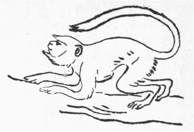
第５図 ハヌマン猴
ハヌマン猴、学名セムノピテクス・エンテルス（第五図）はインドに産し、幼時灰茶色で脊より腰へ掛けて暗茶色の一条あり、長ずるに随い黒毛を混じ石板色となる。顔と四肢は黒く鼻より尾根まで三、四フィート、尾はそれより長し。他猴と異なり果よりも葉を
嗜み、牛羊同然複胃あり。
鼻梁やや人に近く、諸猴に
優れて
相好美し（ウットの『博物画譜』一）。この猴の大群昔その王ハヌマンに従い神軍に大功ありしとて、ハヌマン猴の称あり。ヒンズー教徒のヴィシュニュ（仏典の韋紐）を奉ずる輩もっともハヌマン神を尊べども他派の者もまたこれを敬し、寺堂園林より曠野に至るまでその像を立てざるなく、韋紐の信者多き地にはその像に逢わずに
咫尺も歩み得ず、これに供うるは天産物のみで血牲を用いず、猴野生する処へは日々飯菓等の食物を持ち往き養い最大功徳とす（ジュボア『印度の風俗習慣および礼儀』二巻六章）。一七二七年板、ハミルトンの『東印度記』に、ヴィザガパタムの堂に生きた猴を
祀る、数百の猴食時ここに集まり僧が供うる飯などを
享け、食しおわって列を正して退く、その辺で人を殺すは猴を殺すほど危うからずといい、十七世紀に旅したタヴェルニエーの『印度紀行』には、アーマダバット附近の猴、火金両曜ごとに自らその日と知って市中に来り、住民が屋上に供えた稲稷甘蔗等を食い頬に貯えて去る。万一これを供えざれば大いに
瞋って瓦を破ると述べた。されば今日もビナレスの寺院にハヌマン猴を夥しく供養し、また諸市のバザーに入って人と対等で闊歩し、手当り次第
掴み歩く。紀州田辺の紀の世和志と戯号した人が天保五年に書いた『
弥生の
磯』ちゅう写本に、
厳島の社内は更なり、町内に鹿夥しく人馴れて遊ぶ、猴も屋根に来りて
集う。家々に猴鹿の食物を荒らさぬ用意を致すとあるを見て、インドでハヌマン猴の持てようを想うべし。タヴェルニエーまたサルセッテ島にハヌマン猴王の骨と爪を蔵する銀棺を祀れる塔あり、インド諸地より行列して拝みに来る者引きも切らざりしを、ゴアの天主教大僧正押して取る、ヒンズー教徒莫大の金を以て償わんと乞い、ゴアの住民これを許しその金を以て軍を
調え貧民を
扶くべしと議せしも
聴かれず、これを焼けばその灰を集めてまた祀るを
慮り、棺を海上二十里
漕ぎ出し海に沈めたと述べた。
『ラーマーヤナ』は誰も知った通りヒンズー教の二大長賦の一つで、ハヌマン猴王実にその骨髄というべき活動を現わす。この長賦の
梗概は大正三年二月十日の『日本及日本人』、猪狩史山氏の「ラーマ王物語」を見て知るべし、余も同年八月の『考古学雑誌』に「古き和漢書に見えたるラーマ王物語」を載せた。
迦旃延子の『
 婆沙
婆沙論』に、羅摩那（ラーマーヤナ）一万二千章あり、羅摩泥（ラーヴァナ）私陀（シタ）を
将ち去り羅摩（ラーマ）還って将ち来るに一女の故に十八
※［＃「女＋亥」、U+59DF、82-4］（今いう百八十億）の多数を殺し、また
喧嘩の事ばかり述べあるは至極詰まらぬとあるより、日本の僧侶など一向
歯牙にも掛けなんだらしいが、それは洋人が、『古事記』『日本紀』を
猥雑取るに足らぬ書と評すると一般で、余が交わった多くのインド学生中には羅摩の勇、私陀の貞、ハヌマンの忠義を語るごとに涙下る者少なからぬを見た。今ジュボアの書等より採って略述する。文中人名に漢字を当てたは予の手製でなく実に符秦の朝に支那に入ったカシュミル国の僧伽跋澄の音訳に係る。いわく、羅摩（ラーマ）はアヨジ国王ダサラダが正后カウサリアに生ませた子で、初め林中に瞿曇仙に師事した時、上に述べた通りこの仙人その妻アハリアの不貞を怒り、詛うて石に化しあったのを羅摩足で触れて本形に復せしめた。それからミチラ国王ジャナカを
訪い、シワ神が持った弓あっていずれの国王もこれを
彎き得ずと聞き、
容易くその弓を彎き、その賞として王女私陀（シタ）を
娶ったところを、父王より呼び還され政務を譲らる。一日弓を彎いた
弦音以てのほか響いて
側にあった姙婦を驚かせ流産せしめ、その夫の梵士怒って、
爾今、羅摩、
庸人になれと詛う。それより羅摩生来の神智を喪う。その後ほどなく父王の第四妃その生むところの子を王に
嗣ぎ立てしめんとて、切に羅摩に退位を勧め、羅摩承諾して、弟、羅史那（ラクシュマナ）と自分の妻私陀を伴い林中に隠る。一日羅摩の不在中、羅史那スルパナカの両耳を切り去る。これは楞伽（ランカ、今のセイロン）の鬼王羅摩泥（ラーヴァナ）とて、身体極めて長大に十の頭ある怪物の妹なり。羅摩泥、妹がために返報せんと、私陀を
掠め去る。羅摩帰って妻を奪われしと知り、地に
仆れて
慟哭これを久しゅうしたが、かくてやむべきにあらざれば、何とか私陀を取り返さんと尋ね行く途上、猴王スグリヴァ、その児ヴァリと領地を争い戦うを見、そのためにヴァリを殺す。猴王大いに悦び力を尽して羅摩を助く。羅摩誰かを
楞伽に使わし、敵情を探らんと思えど海を隔てたれば事
容易からず。この時スグリヴァ猴王の軍を督せしハヌマン、身体極めて
軽捷で、たちまち海上を歩んでかの島に到り、千万苦労してようやく私陀が樹蔭に身の成り行きを歎くを見、また、その貞操を変ぜず、夫を慕い鬼王を
詈るを聴き、急ぎ返って羅摩に報じ、その請に応じて、山嶽、大巌を抜き、自分の身上にあるだけの無数の石を
担げて幾回となく海浜に積み、ついに大陸と島地の間に
架け渡した。羅摩すなわち猴軍を先に立て、熊軍をこれに次がせて、新たに成った地峡を通り、楞伽城を攻め、勝敗多回なりしもついに敵を破って鬼王を
誅し、私陀を取り戻し、故郷へ帰った。
竜樹菩薩の『大智度論』二三に問うて曰く、人あり無常の事至るをみ、
転た更に堅く著す、国王夫人たる宝女地中より生じ、十頭の
羅刹のために大海を将ち渡され、王大いに憂愁するを智臣
諫めて、王智力具足すれば夫人の還るは久しからざる内にあり、何を以て憂いを
懐かんと言いしに、王答えて我が憂うる
所以は我が婦を取り還しがたきを
慮らず、ただ壮時の過ぎやすきを恐ると言いしがごとしとあり。これは『羅摩延』（ラーマーヤナ）の長賦に、私陀実は人の腹から生まれず、父王子なきを憂い神に祈りて地中より掘り出すところ、その美色持操人界絶えて見ざるところとある故宝女といい、古インド人はセイロンの生蕃を人類と見ず、鬼類として羅刹と名づけた。十頭羅刹とはその酋長が十人一組で土人を統御し、それが一同に羅摩の艶妻を賞翫せんとて奪い去ったのであろう。王の智力もて夫人を取り戻すは成らぬ事にあらずというに答えて、ついには取り戻し得べきも、その間にわれも夫人も花の色の盛りを過ぎては面白い事も出来ぬでないかと羅摩の述懐もっとも千万に存ずる。それを散ればこそいとど桜はめでたけれ、浮世に何か久しかるべき、と諦め得ぬ羅摩の心を愚痴の極とし、無常の近づき至るほどいよいよ深く執著する者に比したのだ。
さて羅摩王久しぶりで恋女房を難苦中より救い出し、伴うて帰国した後、一夜微服して城内を歩くと、ある洗濯師の家で夫妻詈り合う。亭主妻に向いわれは一度でも他男に
穢された妻を家に置かぬ、薄のろい羅摩王と大違いだぞと言うた。その声
霹靂のごとく羅摩の胸に答え、急ぎ王宮に還って
太く怒り悲しみ、直ちに弟ラクシュマナを召し私陀を林中で殺さしむ。ラクシュマナ、その
嫂の懐胎して臨月なるを憐み、左思右考するに、その林に切れば血色の汁を出す樹あり、因ってその汁を
箭に塗り、私陀を林中に棄て、帰って血塗りの箭を兄王に示し、既に嫂を射殺したと告げた。私陀林中にさまよい声を放って泣く時、その近処に隠棲せるヴァルミキ仙人来って仔細を聞き、大いにその不幸に同情し、慰めてその庵へ安置し介抱すると、数日にして二子を生み、仙人これを自分の子のごとく愛育した、ほどへて羅摩ヤグナムの
大牲を行わんとす。これは『詩経』に
 牡
牡既に備うとあり『史記』に秦襄公
 駒
駒を以て白帝を
祀るとあって、支那で古く馬を牲にしたごとくインドでも
委陀教全盛の昔、王者の大礼に馬を牲にしたのだ。今羅摩が牲にせんとせる馬、
脱れて私陀の二児の住所へ来たので、二児
甫めて五歳ながら勇力絶倫故、その馬を
捉え
留めた。盗人を捕えて見れば我子なりと知らぬ身の羅摩、すなわちハヌマンを遣わし大軍を率いて征伐せしめたが、二児に手
甚く破られて逃れ還る。ここにおいて羅摩自ら総兵に将として、往き伐ち、また敗れて士卒
鏖殺と来た。処へ二児の養育者ヴァルミキ仙来って、惻隠の情に堪えず、呪言を唱えてことごとく蘇生せしむ。
羅摩王、宮に還って馬牲をやり直さんとし、隣国諸王と国内高徳の諸梵士を招待す。梵士らこの大礼を無事に遂げんには必ず私陀を
喚べと勧め、羅摩、様々と異議したが、ついにこれを召還しよく扱うたので大牲全く済む。羅摩
化の皮を現わし、また妻の不貞を疑い、再び林中に追いやらんとするを諸王
宥め止む。羅摩なお不承知で、私陀永く楞伽に拘留された間一度も敵王に穢された事なくば、
須く火に誓うて潔白を証すべしと言い張る。私陀固くその身に

なきを知るから、進んで身を火中に投ぜしも焼けず。他にも種々その潔白を証したが、なお全く夫王の嫉妬を除く能わず、私陀は「熱い目を私陀のも私陀で無駄になり」で、今は絶望の余り自分が生まれ出た大地に向い、わが節操かつて汚れし事なくんば、汝、我が足下に開いてわれを呑めと願うに応じ、土たちまち裂けて私陀を呑みおわった。羅摩これを見て大いに悔い、二子にその国を
頒ち、恒河の
辺に
隠栖修道して死んだというのが一伝で、他に色々と異伝がある。
この譚に対して欧人間にも非難少なからず、われわれ日本人から
攷えても如何な儀も多いが、かかる事はむやみに自我に執して他を排すべきにあらず。たとえば欧州やインドの人は蟾蜍（ヒキガエル）を醜かつ大毒なる物として
酷く嫌う。しかるに吾輩を始め日本人中にこれを愛する者少なからず。アメリカインデアン人もまたしかり。モニエル・ウィリヤムスの『
印度教篇』に、蛇は大抵の民族が
甚く忌むものながら、インド人はほとんど持って生まれたように心底からこれを敬愛称美するとあった。予かつて南ケンシントン美術館に
傭われいし時、インドの美術品に貴婦が、遊逸談笑するに両
肱を挙げて、
腋窩を
露わすところ多きを見て、インドの貴紳に向い、甚だ不体裁な事と語ると、その人わが見るところを以てすればこれほど端正な相好なしと至って
真面目に答え、更に館に多く集めた日本の絵に、美女が少しく
脛を露わせるを指ざし、非難の色を示した。されば
太宰春台が『
通鑑綱目』全篇を通じて朱子の気に
叶うた人は一人もないといったごとく、第一儒者が道徳論の振り出しと定めた『春秋』や、『左伝』も、君父を
弑したとか、兄妹密通したの、人の妻を奪うたのという事のみ多く、わが邦で賢母の模範のようにいう曾我の老母も、若い時京の人に
相馴れて京の小次郎を生んだとあるから私通でもしたらしく、
袈裟御前が夫の身代りに死んだは
潔けれど、死する事の一日後れてその身を
盛遠に汚されたる事千載の遺恨との評がある。
常磐が三子助命のために忍んで夫の仇に身を任せたは美談か知らぬが、寵
弛んで更に他の男に嫁し、子供多く設けたは愛憎が尽きる（『曾我物語』四の九、『源平盛衰記』一九、『
昔語質屋庫』五の一一、『平治物語』牛若奥州
下向の条）。しかしながらこれら諸女の譚は、道義に立脚した全くの
戯作でなく、それぞれかつて実在した事蹟に拠って
敷衍したものなれば、要は時に臨んで人を感ぜしめた一言一行を称揚したまでで、各生涯を通じて完全
無瑕と保険付きでない。女権が極めて軽かった古代には、気が付きいても心に任せぬ事多く、何ともならぬ遭際のみ多かったのだ。いわんや風土習慣ことごとく異なったインドで、しかも西暦紀元前九百五十年より八十六万七千百二年の間にあったという遠い昔のラーマーヤナ事件を、今日他国人どもがかれこれ評するは野暮の至りだが、このような者を宗旨の経王として感涙を催すインド人も
迂闊の至り。それを笑いながら、歴史専門家でなければ記憶せぬ善光寺大地震の頃生まれたカール・マルクスを新説として珍重がるも、阿呆の骨頂と
岩猿を
絵図と猴話に
因んで
洒落て置く。
（大正九年十一月、『太陽』二六ノ一三）
ラーマーヤナの譚をわが国で最も早く載せたは『
宝物集』で治承の頃平康頼が筆すという。その略にいわく、昔釈迦如来
天竺の大国の王と生まれて
坐しし時、隣国舅氏国飢渇してほとんど餓死に及べり。舅氏国の人民相議して我らいたずらに死なんより、隣の大国に向うて五穀を奪い取って命を活くべし、一日といえども存命せん事、
庶幾うところなりとて、すでに、軍、立つを大国に聞き付けて万が一の勢なるが故に軽しめ嘲りて、
手捕にせんとするを聞きて、大臣公卿に
宣わく、合戦の時多くの人死せんとす。願わくば軍を止むべしと制したまいしかば、
宣旨と申しながらこの事こそ力及び
侍らね
［＃「侍らね」は底本では「待らね」］、隣国進み襲うを闘わずば存命すべからずと申し
侍りければ、大王
窃かに后を呼んで、我れ国王として合戦を好まば多くの人死せんとす、我れ深山に
籠りて仏法を修行すべし、汝は如何思いたもうと宣いければ、后今更に如何離れ奉らんとのたまいければ、ついに大王に具して深山に籠りたまいぬ。大国の軍、国王の失せたもう事に驚きて戦う事なくして小国に
順いぬ。大王深山にして嶺の木の子を拾い、沢の岩菜を摘んで行いたまいけるほどに、一人の梵士出で来りて
御伽仕るべしとて仕え奉る。大王嶺の木の子を拾いに
坐したる間に、この梵士后を盗んで失せぬ。大王還って見たもうに后の
坐せざりければ山深く尋ね入りたもう。道に大なる鳥あり、二つの羽折って既に死門に入る。大鳥大王に申さく、
日来附き奉りたりつる梵士后を盗み奉りて逃れ侍りつるを、大王還りたもうまでと思いて防ぎ侍りつれども、梵士竜王の姿を現じてこの羽を
蹴折りたりといいてついに死門に入りぬ。大王哀れと
思して
高嶺に掘り埋めて、梵士は竜王にてありけるという事を知って、南方に向って坐しましけるほどに、深山の中に無量百千万の猿集りて罵りける処へ坐しぬ。猿猴大王を見付けて悦んでいわく、我ら年来領する山を隣国より討ち取らんとするなり。明日
午の時に軍定むべし、大王を以て大将とすべしという。大王思いがけぬところへ来りて
悔しく思し召しながら、承りぬとて居たまいたりければ、弓矢をもて大王に奉れり。いうがごとく次の日の午の時ばかりに、池に藻
靡きて数万の兵襲い来る。大王猿猴の勧めに依って弓を引いて敵に向いたもうに、
弓勢人に
勝れて
臂背中に廻る。敵、大王の弓勢を見て
箭を放たざる先に
遁れぬ。猿猴ら大いに悦び、この喜びにはいかなる事をか成さんずるといいければ、大王告げて曰く、我れ年来の后を竜王に盗み取られたり。故に竜宮城に向って南方へ行くなり、と宣いければ、猿猴ら申さく、我らが存命
偏に大王の力なり、いかでか、その恩を思い知らざらん、速やかに送り奉るべしとて、数万の猿猴大王に
随って往き、南海の
辺に到りければ、いたずらに日月を送るほどに、梵天帝釈大王の殺生を恐れて国を捨て、猿猴の恩を知って南海に向う事を憐れと思して、小猿に変じて数万の猿の中に
雑りていうよう、かくていつとなく竜宮を守るといえども叶うべきにあらず、猿一つして板一枚草一把を儲けて橋に渡し、
筏に組みて竜宮城へ渡らんといいければ、小猿の
僉議に任せて、各板一枚草一把を構えて橋に渡し、筏に組みて自然に竜宮城に至れば、竜王、怒りをなして大なる声を起して光を放つほどに、猿猴霧に酔い雪に怖れて
顛れ伏す。小猿雪山に登りて大薬王樹という樹の枝を伐って、帰り来りて酔い臥したる猿どもを
撫ずるに、たちまち
酔醒め心
猛くなって竜を責む。竜王光を放って
鬩ぎけるを大王矢を射出す。竜王大王の矢に
中りて猿猴の中に落ちぬ。小竜ら戦わずして遁れ去りぬ。猿猴ら竜宮に責め入って后を取り返し七宝を奪い取って本の深山に帰る。
さてかの舅氏国の王失せにければ、大国、小国、臣下等この王を忍びて迎え取りて、二箇国の王としてあり、細かには『六波羅蜜経』にぞ申しためると。
熊楠いまだ『六波羅蜜経』を見及ばぬが、三国呉の時支那へ来た天竺三蔵法師康僧会が訳した『六度集経』五にラーマーヤナ譚あるを見出し、『考古学雑誌』四巻十二号へ載せた。当時の俗支那語で書いたらしくてちょっと読みにくい。大意は『宝物集』と同様ながら、板や草を橋筏とする代りに石を負うて海を
杜ぎ猴軍が渡ったとあり。私陀妃の終りも上に引いた一伝にほぼ同じくてやや違う。王敵を平らげ帰って妃に向って曰く、婦、夫とするところを離れ、隻行一宿するも、衆疑望あり、
豈いわんや
旬朔をや、
爾汝の家に還らば事古儀に合わんと、妃曰くわれ
穢虫の窟にありといえども蓮の
淤泥に居るがごとしわれ言信あれば地それ
折けんと、
言おわりて地裂く、曰くわが信現ぜりと、王曰く、
善哉、それ貞潔は沙門の行と、これより、国民、王の仁と妃の貞に化せられたと述べ居る。
この『六度集経』がラーマーヤナ譚を支那で公にした最古の物であろう。原来『ラーマーヤナ』は上に述べた私陀の二子を養育した仙人ヴァルミキの本作といわれ、異伝すこぶる多く、現存するところ三大別本あり。毎本所載の三分一は他本に全く見えず、いずれも梵語で筆せられしは仏在世より後なれど、この物語は仏在世既にあまねく俗間に歌われ種々の増補と
改竄を受けたのだから、和漢の所伝が現在インドの諸本と異処多きはそのはずだ。仏典にはこれを一女の故を以て十八
※［＃「女＋亥」、U+59DF、91-7］（今の
計え方で百八十億）の大衆を殺した喧嘩ばかり書いた詰まらぬ物と
貶し、『六度集経』にも羅摩を釈尊、私陀をその妻
瞿夷、ハヌマンの本尊帝釈を釈尊の後釜に坐るべき未来の仏
弥勒としながら羅摩、私陀等の名を一切抹殺して単に大国王、その妃などといい居る。故にラーマーヤナ譚が三国の世既に支那に入りいたとはちょっと気付いた人がなかったと見える。
ハヌマン猴はかく羅摩に精忠を尽して神物と崇めらるるから、インド人はこれを殺すを大罪とする由上に述べた。テンネントの『
錫蘭博物誌』にいわく、インド人はハヌマン猴が殺された処に住む人はやがて死ぬばかりか、その骨を埋めた地上に家建てても繁昌せぬと信じ、必ずまず術士を招き、きっとその骨が土中になきと占い定めた
後家を立てる。かく不吉と思い込んだからハヌマンの
屍骸を見ても口外せぬ。
さてセイロンのシンガリース人は林中で猴が死んでも屍を見せぬといい、その諺に「白い鳥と稲鳥（パッジー・バード、
鷺の一種）と直な椰樹と死んだ猴、それを見た人は死なぬはず」という。これは
件のハヌマンの屍を見ても口外せぬインドの風が移ったのだろうと。註にいわく、ジブラルタルでも猴の屍を見た事なしというと。虎は死して皮を留むとか、
今井兼平などは死に様を見せて高名したが、『愚管抄』に重成は後に死にたる処を人に知られずと
誉めけりとある。
多田満仲の弟、満政の後で美濃の青墓で義朝と名のり、面皮を剥いで死んだ源重成を
指すか。『大和本草』には猫は死ぬ時極めて醜い由で、隠れて人には見せぬとあるが余は幾度も見た。ある知人いわく、猫の屍は
毎々見るが純種の日本犬の死体は人に見せぬと。
前出ハヌマン猴王の素性について異説あり、羅摩の父ダサラダ子なきを憂い神に牲すると、牲火より神現じ天食を王に授く。その教えに任せて王これを三妃に頒つにその一人分を
鷲が
掴んで同じく子を求めて苦行中のアンジャニ女の手に落し入る。それを食うてたちまち孕み生んだその子がハヌマンだったという。ハヌマン猴王は死せず、その身金剛にして
膂力人に絶す。羅摩の
楞伽攻めに鳥語を解いたり、海を跳び越えたり、猫に化けたり、山を抜き持って飛んだり、神変出没限りなく、ついに私陀を取り還すその功莫大なり。一度『ラーマーヤナ』を通読すると支那の『西遊記』の孫悟空はどうもハヌマン伝から転出したよう思われる。羅摩、
軍に勝ちて楞伽を鬼王の弟に与え、ハヌマンをしてその島を守護せしめた。ハヌマンは
娶らず、強勢慈仁の神にして人に諸福を与う。また諸鬼、妖魅、悪精、
巫蠱を
司る。悪鬼に付かれし者これに
祷れば退く。流行病烈しき時もこれに祷る。鬼に付かれ熱を病む者、その像や
祠を望んだばかりで癒え鬼叫ぶという。インド人は星の廻り合せで一年より七年半の間厄に当る。その時、凶女神パノチ、金、銀、銅、鉄の足で人体に入る。頭に入れば失神し、心臓に入れば貧乏になり、足に入れば身病む。昔十頭鬼王の従弟アヒとマヒ、魔法を以て羅摩兄弟を
執え、パノチに牲せんとした時、ハヌマンその祠に乱入してパノチを踏み
潰し二人を救うた縁により、右様の厄年の人は断食してハヌマンに祷れば無難だ。俗伝にこの猴王十二年に一度呼ばわる、それを聞いた者は
閹人となるという。予はとかく女難に苦しむから思い切って聞かせてもらおうかしら。猴王像に注いだ油をナマンと呼び、眼に塗れば視力強く、邪鬼に犯されず、猴王を拝むに土曜最も宜しく、鉛丹と油はその一番好物たり。ハヌマン味方の
創を治せんとて薬樹を北海辺に探るうち日暮れて見えぬを憂い、その樹の生えた山を抱えて飛び返るとて矢に中った時、この二物を塗って
疵癒え、楞伽平定後、獲た物を以て子分の猴卒どもに与え尽した時、またこの二物のみ残ったからだ（『グジャラット民俗記』五四―一五六頁）。
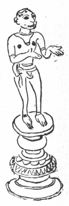
第６図 ハヌマン神像
『コンカン民俗記』二章にいわく、大抵の村で主として猴王をその入口に
祀り、シワ大神の化身として諸階級の民これを崇む。その祭日に祠を常緑葉と花で飾り、石造の神像を丹と油で塗り替え、
花鬘をその
頸にかけ、果を供え、
樟脳に点火して
薫らせ廻り、香を
焼き飯餅を奉る、祠官神前に供えた椰子を砕き一、二片を信徒に与う。村の入口に祀るは、この神、諸難の村に入るを防ぐからで、昔は城砦を新設するごとにその像を立てた。この猴かつて聖人、仙人、梵士および牛を護るに
力めて神位に昇ったと。わが邦でも熊野地方で古来牛を神物とし藤白王子以南は牛を放ち飼いにした。毎春猴舞わし来れば猴を神官に装い、牛舎の前で祈祷の真似せしめまた舞わせた。和深村辺では今に猴の手を牛小屋に埋めて牛疫を
辟く。『記』にまたいわく、猴王作ったてふマントラ・シャストラ（神呪論）を講ずれば力強くて神のごとくなるという。ハヌマン像に戦士と侍者の二態あり。前者はこの神を本尊と
斎く祠に限り、後者は羅摩またはその本身
韋紐を本尊として
脇立とす（第六図は余が写実し置いた脇立像なり）。多力神なる故に力士の腕にその像を
佩びまた競技場に祀る。その十一体の風天の化身なる故に十一の数を好む。子欲しき者は丹でその像を壁に画き、檀香とルイ花を
捧げて日々祀る。また麦粉で作った皿にギー（澄酪）を盛り、燈明を
上ると。
明治二十六年予、故サー・ウォラストン・フランクス（『大英百科全書』十一版十一巻に伝あり）を助けて大英博物館の仏像整理中、本邦祀るところの
庚申青面金剛像に必ず三猿を
副える由話すと、氏はそれはヒンズー教のハヌマン崇拝の転入だろうと言われた。当時パリにあった土宜法竜師（現に高野山管長）へ問い合わせたところ、青面金剛はどうもハヌマンが仕えた羅摩の本体韋紐神より転化せるごとしとて、色々二者の形相を対照し、フランクス氏の推測
中れるよう答えられた（一九〇三年ロンドン発行『ノーツ・エンド・キーリス』九輯十一巻四三〇頁已下、拙文「三猿考」）。ここに詳述せぬが二氏の見は正しと
惟う。『垂加文集』に〈
庚申縁起、帝釈猿を天王寺に来たらしむ云々、これ
浮屠通家説を窃みこれを造るのみ〉とあれど、遠く三国時代に訳された『六度集経』に、羅摩王物語を出して猴王（スグリヴァ、上出）衆を率い海に臨み、以て渡るなきを憂う。天帝釈化して猴となり身に疥癬を病めり、来り進んで猴衆に石を負わせ、海を
杜がしめ衆
済るを得とあり。『宝物集』にも似た事を記す。『
委陀』にハヌマンの父マルタ（風神）を帝釈の最有用な味方とし韋紐を帝釈の応神とす。
後韋紐の名望高まるに及び全く帝釈と分離対抗し風神猴となって韋紐に従う（グベルナチス『動物譚原』二巻九九頁）。故に韋紐転化の青面金剛を帝釈の使者、猴を青面金剛の手下とするは極めて道理なり。『嬉遊笑覧』に『遠碧軒随筆』を引いて、庚申の三猿はもと天台大師三大部の中、
止観の空仮中の三諦を、
不見、
不聴、
不言に比したるを猿に表して
伝教大師三猿を
創めたという。
しかれども一八八九年板モニエル・ウィリアムスの『仏教講義』に、オックスフォード大学の博物館に蔵する金剛尊は三猴を侍者とすと記し、文の前後より推すにどうもチベット辺のもので日本製でなさそうだった。その出所について問い合わせたが氏既に老病中で明答を得ず。かれこれするうち予も帰朝してそれなりで過した。『
南畝莠言』の文を読み損ねて勝軍地蔵を日本で
捏造したように信ずる者あるに、予はチベットにも北京にもこの尊像あるを確かに知る。それと同例で庚申の三猿も伝教の創作じゃなかろう。道家の説に
彭姓の三
尸あって常に人身中にあり、人のために罪を伺察し庚申の日ごとに天に上って上帝に告ぐる故、この夜
寝ずして三尸を守るとあって、その風わが邦にも移り、最初は当日極めて謹慎し斎戒してその夜を守りしなるべけれど、追々は徹夜大浮れに宴遊して邪気を
禳うとしたらしく、甚だしきはその混雑中に崩れさせたまえる方さえもある。けだしこの夜男女の事あるを大罪として天に告げらるるを
懼れ、なるべく多勢集って夜を守るを本意としたのだ。三尸は小鬼の類らしい。それを庚申の三猿もて表わしたというが通説だ。
さて上述インドで猴の
尸を見るを不吉とするよりついに猴は死なぬものというに至ったごとく、庚申の夜夫婦の道を行うを避けたところから、後には、『下学集』に〈この夜盗賊事を行うに利あり、故に諸人眠らずして夜を守るなり、ある説にいわく、この夜夫婦婬を行えばすなわちその妊むところの子必ず盗と作す、故に夫婦慎むところの夜なり〉といった通り信ずるに及んだのだ。明和二年刑せられた巨盗真刀徳次郎はこの夜孕まれた由。庚申の申は十二畜の猴に
中る。猴は前にもしばしば述べたごとくすこぶる手癖の悪いもので盗才が多い。パーキンスの『アビシニア住記』一にいわく、カルトウムで狗頭猴の牡一と牝二に芸させて活計する人予に語ったは、この牡猴は無類の盗賊で芸を演ずる
傍一日分の食物を盗むから、マア数分間見ていなさいとあって、猴使いがその猴を
棗売りの側へ伴い行き
蜻蛉返りを演ぜしめた。予注意して見ると、猴は初めから棗に眼を付けたが少しも気色に
露わさねば誰もこれを知らず、猴初めは棗入れた
籃に近寄るを好まぬようだったが芸をやりながら漸次これに近付き、演技半ばにたちまち地に伏して屍のごとし、やがて飛び起きて棗売りの顔を見詰め、大いに叫ぶ
状、どこか痛むか何か怒るものに似たり、かくて後肢を以て能う限りの棗を
窃めど後肢のほかは少しも動かさず、棗売りは猴に
睨まれて大いに
呆れ、一向盗まれいると気付かず、傍人これを告ぐるを聞いて初めて
暁り大笑いした。その間に猴
素迅く頬嚢に盗品を
抛げ込みたちまち籃を遠ざかる。たまたま一童強くその尾を
牽いたので、さては露われたか定めて棗売りの仕返しだろうと早合点してその童子の側を通り、一両人の脚下を
潜って棗売りに
咬み付くところを猴使いが叱り止めて御無事に事済んだと。
明の陶宗儀の『
輟耕録』二三に、
優人杜生の話に、
韶州で相公てふ者と心やすくなり、その室に至って柱上に一小猴を鎖でつなげるを見るに
狡猾らしい。
縦して席間に周旋せしめ、番語で申し付くると俄に一
楪を捧げ至る、また番語で詈れば一碗を
易えて来る、驚いて問うと答えて、
某に
婢あり、子を生んだが
弥月にして死んだ。時にこの猴生まれて十五日、その母犬に殺され終日泣きやまず、因ってこの婢に乳養せしむると、長じて能く人の指使に随い兼ねて番語を解するというた。その後清州に至って呉同知
方に留まる、たちまち客一猴を携えて城に入るありと報ず。呉、杜に語りて、この人は江湖の巨盗だ、すべて人家に至って様子を窺い置き、夜に至って猴を入れて
窃ます、而して彼は外にあって応援す。われ必ずこの猴を奪い人のために害を除かんと言うた。明日その客（すなわち相公）呉に謁す、呉飯を食わせ、その猴を求めしに諾せず、呉曰く、くれずばその首を切ろうと、客
詮方なく猴を与え、呉、白金十両を
酬う。去るに臨んで番語で猴に言い付ける、たまたま訳史聞き得て来って呉に告げたは、客、猴に教えて汝飲まず食わずば必ず縛を解かるべし、その時速やかに逃れ去れ、我は十里外の小寺中に
俟ち受けんというたと。呉、いまだ信ぜず。晩に至って果核水食の類を与え試むるに皆飲食せず、さてはと人を走らせ
覗うとこの客果していまだ行かず、帰り報ずると、呉、猴を打ち殺ししまったと
出づ。
『大清一統志』七九に明の王士嘉よく疑獄を決す。銭百
緡を以て樹下に臥して失うた者あり。士嘉曰く、この樹が
祟ったのだ、これを治すべしとて駕してその樹下に往く、士民皆見物に出る、その間密偵せしむるに一人往かざる者あり、これを吟味するに果して盗なり。また代王の内蔵の物失せて戸締りは
故のごとし、士嘉これきっと
猴牽が猴を使うたのだと言いて、
幣を庭に
列ね、群猴をして
過らしめて伺うに、一つの猴が
攫み去った、その猴の主を
詰るに恐れ入ったとある。
『犬子集』に「何事も祈れば叶へ猴の夜に」「あらはれぬるは怪し盗賊」。『
筑紫琴の
唄』にもある通り、
庚申が
叶え
猴に通うより庚申の夜祈れば何事も叶うとしたらしい。しかるに一方では猴がややもすれば手が長いところから、今も紀州などの田舎では庚申の夜交われば猴に似て手癖悪き子を生むと信ずると同時に、庚申を信ずれば盗難を免るとし、
失踪人や紛失物を戻し、盗賊を捕うるにこの神に祈り、縄を以てその像を縛るは、その本意神様を盗人と見立てたので、この神、
本は猴だったと知れる。されば
僻地盗難繁かった処々は、庚申に祈りて盗品を求め、盗もまた気味悪くなってこれを返却した例多く、庚申講を組んで順次
青面金剛と三猿の絵像を祭りありく風盛んなり。さて田舎の旅宿が大抵その講の元を勤める。盗難多き旅宿は営業ならぬからで、庚申塚を道側に立てるも主として盗難少なく道路安全を
冀うての事と見ゆ。
『俗説贅弁』巻一や『温故随筆』に徳川幕府中頃までの神道者が庚申は猿田彦命と説いたのを非とし、
就中『贅弁』には神徳高き大神を如何ぞ禽獣とすべけんやと詈り居る。しかるに出口米吉君の近刊『日本生殖器崇拝略説』に『日本書紀通証』から孫引きされた『扶桑拾遺集』に、〈
源順、庚申
待夜、伊勢斎宮に侍りて、和歌を奉る、小序に曰く、
掛麻久毛畏幾大神、
怜礼登毛、
愛美幸賜天牟〉とある由。これは
衢の神たる猿田彦大神を青面金剛すなわち三猿の親方と同体と心得、道家のいわゆる三尸が天に登って人の罪悪を告ぐるを防がんため、庚申の夜を守って長寿を保たん事をかの大神に祈るの意を述べたと見える。したがって猿田彦と庚申と同一神とは平安朝既に信ぜられいたのだ。さて、『贅弁』に神徳高き大神を如何ぞ禽獣とすべけんやと詈ったが、『
玉鉾百首』に「いやしけど、いかつちこたま狐虎、たつの類ひも神の片はし」と
詠んだごとく、上世物をも人をも不思議なものを片端から神としたのは万国の通義で、既に以て
秦大津父は山で二狼の闘うを見、馬より下って口手を洗い浄め、汝これ貴き神にして、麁行を楽しむ、もし猟師に逢わば
禽にされん、速やかに相闘うをやめよと祈って、毛に付いた血を
拭いやり放ったという（『書紀』一九）。この人は殷の伝説同様夢の告げで欽明天皇に抜擢せられ、その財政を司って大いに
饒富を致した賢人だが、それほどの智者でも真実狼を大神と心得る事、今日秩父の狼を大口真神と崇むる
太郎作輩に同じかった。されば猴の特に大きなのを大神とせるも怪しむに足らず。
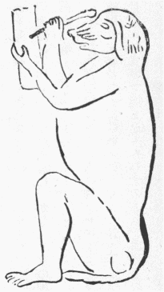
第７図 狗頭形の文字の神トット
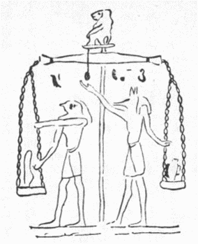
第８図 古エジプト土人死後の裁判
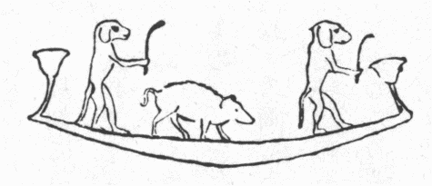
第９図 狗頭猴悪人の魂を送還す
似た例を挙げると昔いと久しく大開化に誇ったエジプト国でも数種の猴を尊んだ。その内もっとも崇められたはシノセファルス・ハマドリアスてふ狗頭猴で、古エジプト神誌中すこぶる顕著なる地位を占めた。昨今エジプトに産しないでアラビアとアビシニアに
棲み、時として大群を成す。身長四フィートばかり、その顔至って狗に似て長く、両肩に立て髪がない。この猴文字の神トットの使者たるのみならず、時としてトット自身もこの猴の形を現じた（第七図）。トットは通常人身
朱鷺頭で現じたのだ。エジプト人この猴を極めて裁判に
精しとした。第八図は野干（ジャッカル）頭の神アヌビスと鷹頭の死人の守護神が、死人の
業を
秤る
衡の上に狗頭猴が坐し、法律の印したる鳥羽と死人の心臓が同じ重さなるを確かめてこれを親分のトットに報ずるところだ。さて衆神の書記たるトットがこれを諸神に告げるのだ。また第九図のごとく
豕に
像った悪人の魂を舟に載せて、もう一度苦労すべく
娑婆へ送還する画もある。またこの猴を月神の使者としその社に飼った。その屍は丁寧にミイラに仕上げて特設の猴墓所に葬った。けだしバッジの『
埃及人の諸神』一巻二一頁に言えるごとく、狗頭猴のこの種は至って怜悧で、今も土人はこれを諸生物中最も智慧あり、その
狡黠を遥かに人間を駕するものとして敬重す。古エジプト人これを飼い教えて
無花果を集めしめたが、今はカイロの町々で太鼓に合わせて踊らされ、少しく間違えば用捨なく
笞うたるるは、かつて文字の神の
権化として崇拝されたに比較して猴も今昔の歎に堪えぬじゃろとウィルキンソンは言うた（『古埃及人の習俗）』巻三）。またいわく、アビシニアの南部では今もこの猴に種々有用な芸道を仕込む。たとえば、
夜、
燭を
秉って遊宴中、腰掛けを
聯ねた上に数猴一列となって各の手に
炬火を捧げ、客の去るまで身動きもせず、けだし盗人の昼寝で当て込みの存するあり、事終るの後
褒美に残食を頂戴して舌を打つ覚悟なんだ。ただし時に
懈怠千万な猴が火を落したり、甚だしきは余念なく歓娯最中の客連の真中へ炬火を投げ込む事なきにあらず、その時は強く笞うちまた食を与えずして懲らす故閉口して勤務するようになるんだと。ちょっと
啌のようだがウィルキンソンほどの大権威家がよい加減な言を吐く気遣いなし。明治十年頃まで大流行だった西国合信氏の『博物新編』に、猴は人が焚火した跡へ集り来って身を
煖むれど、火が消えればそのまま去り、
直側にある木を添える事を知らぬとあったを今に信ずる人も多いが、それは世間知らずの蒙昧な猴どもで、既にパーキンスから、今またウィルキンソンから引いた記述を見ると、少なくとも狗頭猴中もっとも智慧あって古エジプト人に文字の神アヌビスの使者と崇められたいわゆるアヌビスバブーンは、人を見真似に
竈に火を絶やさず
炬火を扱う位の役に立つらしい。ダンテの友が猫に教えて夜食中
蝋燭を捧げ侍坐せしむるに、生きた燭台となりて神妙に勤めた。因ってダンテに示して「教えて見よ、蝋燭立てぬ猫もなし、心からこそ身は
賤しけれ」と誇るをダンテ心
悪く思い、一夕鼠を隠し持ち行きて食卓上に放つと、猫たちまち燭を投げ棄て、鼠を追い廻し、
杯盤狼藉と来たので、教育の方は持って生まれた根性を制し得ぬと知れと言うて帰ったと伝う。
海狗は四肢が
鰭状となり陸を歩むに
易からぬものだが、それすらロンドンの観場で鉄砲を放つのがあった。して見ると教えさえすれば猴も
秉燭はおろか中らずといえども遠からぬほどに発銃くらいはするなるべし。ただし『五雑俎』に明の名将威継光が数百の猴に鉄砲を打たせて
倭寇を
殲したとか、三輪環君の『伝説の朝鮮』一七六頁が、楊鎬が猿の騎兵で日本勢を全敗せしめたなど見ゆるは全くの小説だ。それから前述のごとく、ベッチグリウ博士が、猴類は人に実用された事少しもなく、いまだかつて木を
挽き水を汲むなどその開進に必要な何らの役目を務めず、ただ時々飼われて娯楽の具に備わるのみ、それすら本性不実で悪戯を好み、しばしば人に咬み付く故十分愛翫するに
勝えずとは争われぬが、パーキンスが述べたごとく、飼い主の
糊口のために舞い踊りその留守中に煮焚きの世話をし、ウィルキンソンが言った通り人に
事えて種々有用な役を勤むる猴もなきにあらず。したがって十七世紀に仏人バーボーが西アフリカのシエラ・レオナで目撃した大猴バリの幼児を土人が捕え、まず直立して歩むよう教え、追い追い穀を
舂く事と、瓢に水を汲んで頭に載せ運び、また
串を廻して肉を
炙る事を教えたというも事実であろう（一七四五年板、アストレイの『新編航記紀行全集』二巻三一四頁）。この猴甚だ
牡蠣を好み、引き潮に磯に
趨き、牡蠣が炎天に
爆されて殻を開いた口へ小石を打ち込み肉を取り食う。たまたま小石が
滑り
外れて猴手を
介に
挟まれ
大躁ぎのところを黒人に捕え食わる。欧人もこれを食って美味といったが、バーボーは食う気がせなんだという。前にも述べた通り猴は形体表情人を去る事間髪を
容れず、したがってこれを殺しこれを食うは人情に
反くの感あり。楚人猴を
烹るあり、その隣人を召すに以て
狗羹と
為してこれを
甘しとす。後その猴たりしと聞き皆地に拠ってこれを吐き、ことごとくその食を
瀉す、こはまだ始めより味を知らざるものなり（『淮南鴻烈解』修務訓）。近年死んだヘッケルがエナ大学の蔵中になき猴種一疋を打ち取った時、英人ミラー大佐、たとい科学のためなりともその罪人を謀殺せるに当ると言うた（一九〇六年板コンウェイの『東方諸賢巡礼記』三一七頁）。コンウェイがビナレスの猴堂に
詣で多くの猴を供養したところに猴どもややもすれば自重して人間を軽んずる気質あるよう記した。これ猴の
豪い点また人からいえば欠点で、心底から人に帰服せぬもの故、ややもすれば不誠実の行い多く、犬馬ほど人間社会の開進に必要な役目を勤めなんだのだ。『大集経』に〈
慧炬菩薩猴の身を現ず〉、インドでも猴に炬を持たせたものか。
右述西アフリカのバーボー猴に似た記事が『古事記』にあって「かれ、その
田毘古の神、
阿邪訶に
坐せる時に
漁どりして、ヒラブ貝にその手を
咋ひ合されて
海塩に
溺れたまひき。かれ、水底に沈み居たまふ時の名を
底ドク
御魂といひつ。その海水のツブ立つ時の名をツブ立つ御魂といひつ、その
泡さく時の名を泡サク御魂といひき」。本居宣長はこのヒラブ貝を月日貝のように説いたが、さすがに学問を重んじただけあって、なお国々の人に尋ね問わば今も古えの名の残れる処もあるべきなりと言われた。そしてまたタイラギという貝あり、ギはカイのつまりたるにて平ら貝の意にて是にやと疑いを存せられたは当り居る。
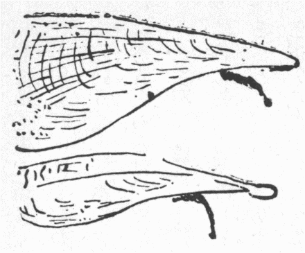
第10図 紀州新庄村のタチガイ二種
田辺附近の新庄村より六十余歳の老婦多年予の方へ塩を売りに来る。
蚤く
大聾となったので四、五十年前に聞いた事のみよく話す。由って俚言土俗に関して他所風の
雑らぬ古伝を受くるに最も
恰好の人物だ。この婆様が四年前の四月、例により塩を
担うて来た畚（フゴ）の中にかの村名産のタチガイ多く入れあった。これは『本草啓蒙』四二にタイラギ、トリガイ（備前、同名あり）、タテガイ（加州）と異名を挙げ、「海中に産す、形蚌のごとくにして大なり、殻薄くして砕けやすく色黒し、挙げて日に映ずれば
微しく透いて緑色なり。長さ一尺余、一頭は
尖り一頭は
漸く広く五、六寸ばかり、
摺扇を微しく開く状のごとし、肉の中央に一の肉柱あり、色白くして円に、
径り一寸ばかり、大なるものは数寸に至る。横に切って薄片と成さば団扇の形のごとし、故に江戸にてダンセンと呼び
炙食
烹食味極めて甘美なり。これ江瑶柱なり、ほかにも三柱ありて合せて四柱なれども皆小にして食うに堪えず、故に宋の劉子

「食蠣房詩」に江瑶貴一柱といえり、その肉は
腥靭にして食うべからず、


「
塩辛」に製すればやや食うべし、備前および紀州の人この
介化して鳥となるといい、試みに割って全肉を見れば実に鳥の形あり、唐山にもこの説あり、しかれども実に化するや否やを知らず」と
出づ。『紀伊続風土記』九七には「立介タチカイ一名鳥介、同名多し、玉

（タイラギ）に似て幅狭く長さ七、八寸、冬より春に至りて食用とす、夏月肉ようやく化して鳥となる。形磯ひよどりに似て頭白く尾なし、鳴く声ヒヨヒヨというごとし、牟婁郡曾根荘賀田浦に多し」と見ゆ。介が鳥になるてふ話は欧州や支那にもありて（マクス・ミュラーの『言語学講義』一八八二年板、二巻五八六頁、王士

の『香祖筆記』十。〈西施舌海燕の化すところ、久しくしてすなわちまた化して燕と為る〉）、その肉が鳥の形に似るに起る。
件の老婦が持ち来ったタチガイを見るに二種あり。いずれもピンナ属のもので、ピンナはラテン語、単数で羽、複数の時は翼の義、形が似たので名づく。いずれも海底に直立し、口の下端に近く毛あって石に付くを外国で織って手袋などにする。第十図甲は殻が末広く細条縦横して小刺多し。これを専らタチガイと称し方言ヒランボと呼ぶ。乙は末広ながら甲に比して狭く、その線条
粗き上ひびわれ多く刺はなし、その肉煙草の味あり、喫烟家
嗜み
啖う。方言これをショボシと称う。『和漢三才図会』四六に、玉
俗いうタイラギ、またいう
烏帽子貝と出づるを見れば、真のタイラギより小さい故小帽子の意でショボシの名あるか。余の所見を以てすれば、『紀伊続風土記』にいえるごとく、タチガイは二種ともタイラギと別物で殻の色黒からず淡黝黄だが、いずれも形はよく似居る。新庄でいうヒランボすなわち真のタチガイが『古事記』に見えた猿田彦を挟んで溺死せしめた介で、ヒランボはその文にいわゆるヒラブ貝なる名の今に残れるものたるや疑いを容れず。宣長がヒラブ貝はもしくはタイラギかと推せしは
中りおり、なお国々の人に尋ねたら今も古名の残った所もあるべしというたが、果して紀州西牟婁郡新庄村に残り居るのだ。猴の話と縁が遠いが、『古事記』は世界に多からぬ古典で、その一句一語も明らめずに過すは日本人の面目を汚す理窟故、猿田彦に因んでヒラブ貝の何物たるを弁じ置く。さて猿田彦が指を介に挟まれ苦しむうち潮さし来り、溺れて底に沈みし時の名を底ドクすなわち底に
著く御魂といい、ツブ立つ時すなわち俗にヅブヅブグチャグチャなどいうごとく水がヅブヅブと鳴った時の名をヅブたつ御魂、泡の起る時の名を泡さく御魂というたとあるは、死にざまに魂が分解してそれぞれ執念が留まったとしたのだ（『古事記伝』巻十六参照）。異常の時に際し全く別人のごとき念を起すこと、酸素が重なってオゾーンとなり、酸素に異なる特性を具うるごときを別に御魂と唱えて
懼れたので、ある多島海島民は人に二魂ありとし、西アフリカ人は毎人四魂ありと信じ、また種々雑多の魂ありとしこれを分別すること難く、アルタイ人は人ごとに数魂ありとし、チュクチー人は人体諸部各別にその魂ありとす（一八七二年板ワイツおよびゲルラント『未開民史』巻六、頁三一二、一九〇一年板キングスレイ『西アフリカ研究』一七〇頁、一九〇六年板デンネット『黒人の心裏』七九頁、一九一四年板チャプリカ『
西伯利初住民』二八二および二六〇頁）。支那でも『抱朴子』に、分形すればすなわち自らその身三魂七
魄なるを見る。『
酉陽雑俎』に人身三万六千神その処に随ってこれに居るなどあるを
攷え合すべし。介が動物を挟み
困しめた記事は例の『戦国策』の
鷸蚌の故事もっとも顕われ、
其碩の『
国姓爺明朝太平記』二の一章に、旅人が乗馬して
海人に赤貝を買い取って見る拍子にその貝馬の
下顎に
咋い付き大いに困らす。下人祝してお前は長崎丸山の出島屋万六とて女郎屋の一番名高い
轡、その轡へ新しい上赤貝の女郎が思い付いて招かぬに独り食い付くと申す
前表と悦ばす所あるはこれに拠って作ったのだ。その他『甲子夜話』一七に、
平戸の海浜で猴がアワビを採るとて手を締められ岩に挟まり動く能わず、
作事奉行川上某を招く故行って離しやると、両手を地に付け平伏して去ったとあるが、礼に何も持って来たとないところがかえって事実譚らしく、九世紀に支那に渡ったペルシャ人アブ・ザイド・アル・ハッサンの『紀行』（レイノー仏訳、一八四五年板一五〇頁）にも、狐が介の開けるを見、その肉を食わんと
喙を突っ込んで
緊しく締められ、顛倒して悶死した処へ往き会わせたアラビア人が介の口に何か光るを見、破って最高価の真珠を獲たと記す。
本居宣長は
田毘古神の名を
に似たる故とせんは本末
違うべし。獣の
はこの神の形に似たる故の名なるべしと説いた（『古事記伝』巻十五）。これは「いやしけど云々、竜の類いも神の片端と詠みながら、依然神徳高き大神をいかんぞ禽獣とすべけんや」と言った『俗説贅弁』同然の見を脱せず、
田毘古が
に似たのでなく
が
田毘古に似たのだとは、『唐書』に、張昌宗姿貌を以て武后に幸せられた時、
佞人楊再思が追従して、人は六郎の貌
蓮花に似たりと言うが、正に蓮花が六郎に似たるのみといったとあるに似た牽強じゃ。既に以て『日本書紀』に、天孫降下の間先駆者還って
白さく、一神あり天の
八衢におり、その鼻長さ七
咫、背長さ七尺余（まさに七
尋と言うべし）、かつ口尻
明耀、眼
八咫の鏡のごとくにして※
［＃「赤＋色」、U+8D69、109-15］然、赤酸醤に似たりとありて、全く老雄猴の形容だ。宣長これを註して「さて
の形のこの神に似たるを以て思うに、鼻の長きも
に似たり、また背
長七尺余とあるも俗に人の
長立ちを背といわばただおよそその長立ちの事にもあるべけれど、もしその義ならばただに長とのみこそいうべきに、背をしもいえるは、これも
のごとく
這い居ます形についてその背の長さをいうにてもあるべし、神には様々あるめれば這い居たもうとせんも怪しむべきにあらず、もし尋常の人のごとく立ちて
坐さんには、尻のてり耀くというも似つかわしからぬをや」と言ったはもっともだ。それに
介に手を挟まれて
困しむ内、潮に溺れ命を失うたのも猿田彦は老猴を神としたに相違ない証拠だ。熊野などで番ザルと唱え、猴群が食を探る最中一つまた三、四の老猴が番していて怪しき事あれば急に叫んで警報する事、前にパーキンスから引いたアビシニアの狗頭猴に同じ。支那人は善く候するゆえ猴というと説いた。そのごとく猴の酋長が四通八達の道の衢すなわち辻にありて群猴が田畠を荒すを番守したのでこれを衢の神とし、従って道路や旅行の神とし、旅行に盗難は付き物なる上猴の盗み上手な事前述通り驚くに堪えた者多く、ジュボアはインド人が猴を神視する一つの理由はその盗を能くするにありと言ったくらい故、これを盗みの神とし盗みに縁ある足留めの神ともしたのだ。
それから猴の話に必ず引かるる例の『今昔物語』巻の二十六、飛騨国猿神生贄を止むる
語第八に、猴神に
痩せた生贄を供うれば、神怒りて作物も
吉からず、人も病み郷も静かならず、因って生贄に供うべき人に何度ともなく物多く食わせ太らする習俗を載す。凶年に病人多く世間
騒擾するはもちろんだが、この文に拠ればその頃飛騨で猴神を田畑の神としたのだ。他処は知らず今も紀州に猴神の社若干あり、祭日に百姓ども五、六里も歩んで
詣ずる事少なからぬ。さるまさると『
靭猿』の狂言に言えるごとく、作物蕃殖を猴の名に寄せて祝い祈るという。猴が作物を荒す事甚だしき例は前にも載せたが、なおここに一、二を挙げんに、『酉陽雑俎』四に〈婆弥爛国西に山あり、上に猿多し、猿形
絶だ長大、常に田を暴らす、年に二、三十万あり、国中春起ちて以後、甲兵を屯集し猿と戦う、歳に数万殺すといえども、その巣穴を尽くす能わず〉。アストレイの『新編航記紀行全集』二所収、一六九八年ブルユウの『第二回サナガ河航上記』に、西アフリカのエンギアンバてふ処に猴夥しく畑を甚だしく損ずる上、
隙さえあれば人家に入り自分が食い得る以上に多く
耗す故、住民断えず猴と戦争す、欧人たまたま奇物として猴を買うを見て訳が分らず、鼠を持ち来ってこれも猴と同じくらい食物を荒すから同価で買い上げてくれと言うた由。熊野の五村てふ処の人いわく、猴が大根畑へ付くと何ともならず、引き抜いて根を食いおわって丁寧に根首を本処へ生け込み置く故一向気付かず、世話焼くうち
萎れ始めてようやく気が付く事ありと。されば最初猴を
怕るる余りこれに食を供してなるべく田畑を荒さぬよう祈ったのを、後には田畑を守り作物を豊穣にする神としたので、前に載せた越前の刀根てふ処で、今に猴神に室女を牲した遺式を行いながら毎年田畑のために猴狩りを催すは、崇めるのか
悪むのか
辻褄の別らぬようだが、昔猴を怕れ敬うた事も分り、年々殺獲する猴の弔いに室女を捧げてその霊を慰める義理立てにも当るようだ。盗賊
禦ぎに許されて設けた僧兵が、鴨川の水、
双六の
賽ほど法皇を悩ませたり、貿易のために立てた商会がインドを英国へ取ってしまう大機関となったり、とかく世間の事物は創立当時とその意味が変る物と見える。
『酉陽雑俎』巻十一に道士
郭采真言う、人の影の数九に至ると。この書の著者
段成式かつて試みて六、七に至りしがそれ
已外は乱れて弁ぜず、郭いわくようやく炬を益せばすなわち別つべしとありて、九影の神名を書いた物あったが虫に食われて紙面全からず皆まで分らぬと
出づ。予五、六歳の時
行燈を多く
点し自分の影が行燈の数ほど増すを見て至って分り切った事と思うたが、博識ほとんど張華の流かと言われた段氏がこれほどの事を不思議がったは馬鹿げて居る。一七八七年七月九日ロンドンの街上を行く一紳士一貴婦にエリオット博士ちゅう学者が小銃を放ち、いずれも傷つかなんだがその婦人の衣は破れ、二人とも大いに
愕いたので博士は入牢した。その時博士の諸友これを発狂の所作として申告した内に
癲狂院を司るシムモンス博士あり。当時高名の精神病学者でもっとも世に重んぜられた人だが、自分はエリオットと親交十余年深くその狂人たるを知ると言ったので、その確証を述べよと問われて判官に答えたは、この頃エリオットが学士院へ提出するとて草した天体の光に関する論説を自分に贈った。これ確かに彼が狂人たる十分の証拠だという事で法廷で読み上げた内に「日は通常星学家が説くごとき火の塊でなく、実は日の上に濃くあまねく行き渡った光気（オーロラ）ありて日光を発し、その下なる太陽面の住民に十分光りを与え得るが、随分遠距離にあれば住民の迷惑にもならぬ」という一節こそ、殊に気違いの証拠だと述べた。判官は異常な学説を狂人の所作といえば精通真面目の星学家で狂人にしてしまわるる者多からんとて受け付けなんだ。しかし法律上の沙汰でエリオットが同時に射た二銃とも
丸を込みいた確証なしとの一点より無罪と宣告された。ところがこの博士拘引後絶食十三日で死んでしまったは、昨今評判のコルクの市長の足元へも寄れませぬ。ロバート・チャンバースいわく、この事件を新聞紙月並みの法廷傍聴録として看過しがたきは、当時エリオットが
懐いた理想こそ実に現今（一八六四年）第一流の星学諸家が主張する所なれ、さればこれに拠って吾人は世にあまねく知られざる一事を知る。すなわち当世の狂が後代の智となる事もあれば、只今賢いと思わるる多くが、百年立てば阿呆の部に入れらるる事も多かろうと。これ誠に至言で、チャンバースが現今第一流の星学諸家が主張する所とは誰々なるを詳らかにせぬが、最近、日の上に濃くあまねく行き渡った光気より日光を発し、太陽面の住民に十分光を与えながら迷惑は掛けぬなど信ずる学者もないようだから、わずかに六十年足らぬ間に当時の碩学が今日の阿呆と見えるようになったのだ。まだそれよりも著しいは前年、現時為政者たる人が浅薄な理想を実現せんとて神社
合祀を励行し、只今も在職する有象無象大小の地方官公吏が斜二無二迎合して姦をなし、国家の精髄たる歴史をも民情をも構わず、神社旧跡を滅却し神林を濫伐して売り飛ばせてテラを取り、甚だしきは往古至尊上法皇が奉幣し、国司地方官が敬礼した諸社を破壊し神殿を路傍に棄て
晒した。熊楠諸国を遍歴して深く一
塵一
屑をも破壊するてふ事の甚だ一国一個人の気質品性を損するを知り、昼夜奔走苦労してその筋へ進言し、議会でも弁じもらい、ついに
囹圄に
執わるるに至って悔いず。しかるにその言少しも用いられず。不祥至極の事件の関係者が合祀励行の最も甚だしかった地方から出た。神社合祀が容易ならぬ成り行きを来すべきは当時熊楠が繰り返し予言したところなるに、その
讖ついに成りしはわれも人もことごとく悲しむべきである。
鄭に賢人ありて鄭国滅びたるは賢人の言を聞きながら少しも用いなんだからと、
室鳩巣が言ったも思い当る。それにサアどうだ。有司が前陣に立って勧めた薬が
利き廻って今日ドサクサするに及び、ヤレ汽車賃を割引するから参宮に出掛けよとか、ソラ国費を以て某々の社を廓大しようとか大騒ぎに及ぶは既に手後れの至りで、汝の罪汝に報う「世の中の、うさには神もなき物を、心のどけく何祈るらん」と諸神が平家を笑うだろう。これを以てこれを見るに、当身のその本人が十年前に狂と見た熊楠の叡智に今は驚き居るに相違ない。
魏徴、太宗に言いしは、われをして良臣たらしめよ、忠臣たらしむるなかれと。この上仰ぎ願わくば為政者、よっぽど細心してまた熊楠をして先見の明に誇らしむるなからん事を。マアざっとこんな世間だから、段成式が人に九影ありと聞いて感心して『雑俎』に書き留めたのも、諸方の民が人に数魂ありと信ずるのもむやみに笑う訳に行かず。これを笑うたのを他日に及んで笑わるるかも知れぬという訳は、変態心理学の書にしばしば見る二重人格また多数人格という例少なからず。甚だしきは一人の脳に別人ごとく反対した人格を具し、甲格と乙格と相嫌い
悪む事
寇讎のごときもある。されば猿田彦が死に様に現じた動作の相異なるより察して、その時々の心念を平生の魂と別に、それぞれ名を立て神と
視た『古事記』の記述も、アルタイ人が人ごとに数魂ありて各特有の性質、働き、存限ありと信ずるも理に合えりともいうべし。それと等しく一つの神仏菩薩に数の性能を具するよりその性能を別ちて更に個々の神仏等を立てた事多きは、ギリシャ、ローマの神誌や仏経を読む者の熟知するところで、同じ猴ながら見立てように随って種々の猴神が建立された。猿田彦がインドの青面金剛、支那の三尸と結合されて半神半仏の庚申と崇められた概略は出口氏の『日本生殖器崇拝略説』に出で、この稿にも次第したればこの上詳説せずとして、
衢や、旅行や、盗難を司る庚申のほかに、田畑、作物を司る猴神ある事前述のごとく、そのほかまた猴を山の神とせるあり。
玄奘三蔵の『大唐西域記』十に、駄那羯礫迦国の城の東西に東山西山てふ伽藍あり。この国の先王がいかめしく立てたので霊神警衛し聖賢遊息した。仏滅より千年のうち毎歳千の凡夫僧ありてこの寺に
籠り、終りて皆羅漢果を証し、神通力もて空を
凌いで去った。千年の後は凡聖同居す。百余年この
方は坊主一疋もいなくなり、山神形を
易えあるいは
豺狼あるいは
※［＃「けものへん＋鴪のへん」、U+72D6、U+72D6、115-15］となりて行人を驚恐せしむ、故を以て、
空荒闃として僧衆なしとある。既にいったごとく、
は手の長い
猴で、※
［＃「けものへん＋鴪のへん」、U+72D6、116-1］は
神楽鼻で鼻穴が上に向いた尾長猴じゃ。前年予田辺の一旅館で山の神がオコゼ魚に惚れ、
獺を
媒として文通するを、かねてかの魚を慕いいた
蛸入道安からず思い、
烏賊や
鰕を率いて襲い奪わんとし、オコゼ怖れて山奥に逃げ行き山の神に具して妻となる物語絵を見出し、『東京人類学雑誌』二九九号に載せ、また絵師に摸させ自分
詞書を写して米賓スウィングル氏に贈りしに、ス氏木村仙秀氏に表具してもらい、巻物となし今も珍蔵する由。それには山神を狼面に画きあった。今も狼を山神として専ら狩猟を司るとする処が熊野にある。ところが同じ熊野でも安堵峰辺で自ら聞いたは、山神女形で、山祭りの日一山に生えた樹木を算うるになるべく木の多きよう一品ごとに異名を重ね唱え「赤木にサルタに猴滑り」（いずれもヒメシャラ）「
抹香、コウノキ、コウサカキ」（皆シキミの事）など読む。樵夫当日その内に読み込まるるを怕れて山に入らず、また甚だ男子が樹陰に
自涜するを好むと。佐々木繁君説に、山神、海神と各その持ち物の多きに誇る時、山神たちまち（オウチ？）にセンダン、ヤマンガと数え、相手のひるむを見て得意中、海神突然オクゼと呼びたるにより山神負けたとあるを見て、この話の
海内に広く行き渡れるを知った。十分判らぬがオクゼは置くぞえで、海神いざこれから自分の持ち物を算盤に置くぞえと言いしを、山神オコゼ魚が自分の本名を知られたと合点して、敗亡したらしい。諸国に神も人も自分の本名を秘した例多い（『郷土研究』一巻七号）。いわゆる山祭りは陰暦十一月初めの申の日行う。けだしこの山神は専ら森林を司り、その祭日には自分の顔色と名に因んで、赤木に猿たに猿滑りと、一種の木を三様に
懸値して国勢調査すと伝えたのだ。
牡猴が一たび自涜を知れば不断これを行い衰死に及ぶは多く人の知るところで、一八八六年板ドシャンプルの『医学百科辞彙』二編十四巻にも、犬や熊もすれど、猴殊に自涜する例多しと記し、医書にしばしば動物園の猴類の部を童男女に観するを戒めある。予壮時諸方のサーカスに随い行きし時、黒人などがほめき盛りの牝牡猴に種々
猥りな事をして示すと、あるいは喜んで注視しあるいは
妬んで騒ぐを毎度
睹た。『十誦律』一に〈仏舎衛国にあり、
爾時 薩羅
薩羅国に一比丘あり、独り林中に住す、雌
猴あり常にしばしばこの比丘の所に来往す、比丘すなわち飲食を与えてこれを誘う、
猴心軟し、すなわち共に婬を行う、この比丘多く知識あり、来りて相問訊して一面にありて坐す、時に
猴来りて婬を行わんと欲し、一々諸比丘の面を看る、次に愛するところの比丘の前に到り、
住まりてその面を諦視し、時にこの比丘心恥じ
猴を視ず、
猴
尋いで瞋り、その耳鼻を攫し、傷破してすなわち去る、この比丘波羅夷を得、まさに共に住すべからず〉、巻五五に、仏
毘舎離にあった時、一比丘毎度余食を雌猴に与うると〈ついにすなわち親近し、東西を随逐し、乃至手捉して去らず、時に比丘すなわち共に不浄を行う、時に衆多の比丘房舎の臥具を案行し、次にかの林中に至り、かの
猴来りて諸比丘の前にありて住し尾を挙げて相似を現わす、諸比丘、かくのごとき念を作す、この雌
猴今我らの前にありて、相を現ずることかくのごとし、はた余比丘のこの
猴を犯すあるなしか、すなわち隠れて屏処にありてこれを伺う、時に乞食比丘食を得て林中に還り、食しおわりて持して
猴に与う、
猴食しおわりて共に不浄を行う、かの諸比丘観見して、すなわち
語いていわく長老、仏比丘を制して不浄を行うを得ざるにあらずや、彼答えて言う、仏人の女を制して、畜生を制せず、時に諸比丘仏の所に往き云々〉、仏これを
波羅夷罪と断じた。この通り牝猴時として慾火
熾んに人前に醜を露わす事もあるべく、それらの事より山神女性で男子の自涜を好むといい出したものか。『日本及日本人』七二五号に、『談海』十二に山神の像を言いて「猿の
劫をへたるが
狒々という物になりたるが山神になる事といえり」、『松屋筆記』に『今昔物語』の
美作の中参の神は猿とあるを弁じて、参は山の音で、中山の神は同国の一の神といえり、さて山神が猿なるより『好色十二男』に「かのえ
申のごとき女房を持ち合す不仕合せ」とあるも、庚申の方へ持ち廻りたるなれど、面貌より女が山の神といわるる径路を案ずべし。必ずしも女房に限らざるは、『
乱脛三本鑓』に「下女を篠山に下し心に懸る山の神なく」とあると無署名で書いたは卓説だ。維新の際武名高く、その後長州に引隠して毎度東京へ出て今の
山県公などを迷惑させた豪傑兼大飲家白井小助は、年不相応の若い妻を、
居常、猴と呼び付けたと、氏と懇交あった人に聞いたは誠か。予もその通りやって見ようとしばしば思えど、そこがそれ山の神が
恐くて差し控える。
コンウェイはビナレスの猴堂に異類多数の猴が僧俗に供養さるるを観た最初の感想を述べて、この辺で行わるる軌儀は上世の猴が奉じた宗旨を伝承して人間が継続し居るものだが、その人間が逆にことごとく猴の祠堂を奪うてこの堂一つを残したらしいと言った。これは戯言ながら全く
理なからず。『
立世阿毘曇論』二に、この世界に人の住む四大洲のほか、更に
金翅鳥洲、牛洲、羊洲、椰子洲、宝洲、神洲、猴洲、象洲、女洲ありと説く。猴洲は猴ばかり住む処だ。アラビアの『千一夜譚』にも、わが邦の「
猴蟹合戦」にも猴が島あり。『大清一統志』に福建の
猴嶼あり。宋の
 元英
元英の『談藪』に、

州の五峯に至りし人、〈馬上遥かに山中の草木
蠕々とし動くを見る、疑いて地震と為す、
馭者いう、満山皆猴なり、
数千万を以て計る、行人独り過ぐれば、常に戯虐に遭う、
毎に群呼跳浪して至り、頭目胸項手足に
攀縁す、
袞して毛毬を成す、兵刃ありといえども、また施す所なし、往々死を致す〉。千疋猴が人を蒸し殺す山だ。露人ニキチンの紀行にインドの猴に王あり、兵器持った猴どもに護られ林中に住む。人、猴を捕うれば余猴これを王に訴え、王すなわち猴兵を派し捜らしむ。猴兵市中に入りて家を
壊り人を打つ、諸猴固有の語を話し、夥しく子を産む。その子両親に似ざれば官道に棄つるを、インド人拾い取りて諸の手工や踊りを教え夜中これを売る。昼売れば道を覚えてたちまち
還ればなり。アラビアの大旅行家イブン・バツタも、インドの猴王を、四猴、棒を執りて侍衛すと述べた。これらの記事中に
無下の蛮民を猴と混同したもあるべきか（タイラー『原始人文篇』一巻十一章）。
昔人多からざりし世に猴ばかり住んだ地方ありしは疑いなく、さてタイラーも言ったごとく、未開時代には猴を豪い者とし、人を詰まらぬ者とし過ぐる事多かったに付けて、かく他の諸動物に
勝れて多勢で威を振うを見て、その地の所有権は猴にあるごとく認めたのだ。
松を太夫とし、雨を獄に下し、狐に訓示を発し、兎に制条を出した東洋人と
均しく、文化に誇る欧州でも、古くデモクリトスは重罪を犯した動物の死刑を主張し、ヴァロはローマ人労働の棒組たる牛を殺すを殺人罪と
攷えたのみならず、中世まで全く動物を人と同位と見たので、獣畜を法廷で宣言した例多い（『ルヴェー・シアンチフィク』三輯三号、ラカッサニュの「動物罪科論」）、されば本邦でも人文追々発達して、諸動植が占居蕃殖せる地面を人の物とし神の用に供するに及んでも、多くのキリスト教徒が異教の地に入りてせしごとき全滅を行わず、なるべく無害な物を保存して神木神獣とし、これを敬愛して神の使い者としたのは、無類の上出来で、奈良、宮島の猴鹿から、鳥海山の片目のカジカ魚まで、欧人に先だって博愛飛渚に及んだ邦人固有の美徳ありし証ともなれば、邦家の成立由来するところ一朝夕の事にあらざるを明らむべき不成文の史籍ともなったのだ。伊豆の三島の神は鰻を使者とし神池の辺で手を
拍てば無数の鰻浮き出たという。かかる事西洋になかったものか、徳川時代の欧人の書に伝聞のまましばしば書きいる。しかるに今は神池空しく
涸れて鰻跡を絶った由。去冬魚類専門の田中茂穂氏来訪された時、氏の話に、魚類の心理学は今に端緒すら捉え得ずと。
件の鰻ごときは実にその好材料なりしに今やすなわちなし。知らぬが仏と言うものの、かかる事は何卒為政者の気を付けられたい事だ。
猴を神使とせる例、『
若狭郡県志』に上中郡賀茂村の賀茂大明神降臨した時白猿
供奉す、その指した所に社を立てた。飛騨宕井戸村山王宮は田畑の神らしい。毎年越中魚津村山王より一両度常のより大きく薄白毛の猴舟津町藤橋を渡りてここへ使に参る（『高原旧事』）、
江州伊香郡坂口村の菅山寺は昔猴が案内して勅使に示した霊地の由（『近江輿地誌略』九〇）、
下野より会津方面にかけて広く行わるる口碑に、猿王山姫と交わり、京より奥羽に至り、勇者磐次磐三郎を生む、猿王二荒神を助け赤城神を攻めて勝ち、その賞に狩の権を得、山を司ると（『郷土研究』二の一、柳田氏の説）。これはハヌマンの譚に似居る。厳島の神獣として猴多くいたがその屍を見た者なきに
何処へ行ったか今は一疋も見えぬ（同四の二、横田氏説）というは、先述ハヌマン猴は屍を隠すてふインド説に近い。かつて
其諺翁の『
滑稽雑談』三に猿の口開き、こは
安芸宮島にある祭なり。この島猴もっとも多し、毎年二月十一日申の日を限り、同国島の八幡の社司七日の間
祓を行い、申の日に至りてこの島に来り、猿の口開の神事を行う。この日より後この島の猴声を発すといえり。また十一月上申の日
件の社司祓神事を行う事二月のごとし、猿の
口止の神事というなり。この後猴声を入るるなりとあるを読んで、何とか実地研究と志しいたところ、右の報告を見てお
生憎様と知った。『厳神鈔』に山王権現第一の使者に猿、第二の使者鹿なり。春日大明神第一の使者は鹿、第二の使者は猿なり。
日吉にも、インド、セイロン同然猴は屍を
匿す話行われ、
唐崎まで通ずる猿塚なる穴あり、老い果てた猿はこの穴に入りて出ざる由。猿果てたる姿見た者なし、当社の使者奇妙の働き〈古今
勝げて
計うべからず〉という（『日吉社神道秘密記』）。『厳神鈔』に、初め小比叡峰へ山王三座来りしが、大宮は他所へ移り、二の宮は元よりこの山の地主故独り住まる。その時猿形の山神集まりて種々の遊びをして慰めた。これを猿楽の一の縁起と申す。『日吉社神道秘密記』に、〈大行事権現、僧形猿面、毘沙門弥行事、猿行事これに同じ、猿田彦大王、天上第一の智禅〉。『厳神鈔』に大行事権現は山王の
惣後見たり、一切の行事をなすと
出づ。すべて日吉に二十一社ありて仏神の混合甚だしく、記録に牽強多くて事歴の真相知れがたきも、大体を
稽うるに、伝教大師この社を延暦寺に結び付けた遥か以前に、二の宮この山の地主と
斎かれた。そのまた前に猴をこの山の主として敬いいたのがこの山の原始地主で、上に引いたコンウェイの言に
倣うていえば、拝猴教が二の宮宗に、二の宮宗が一層新米の両部神道に
併され、最旧教の本尊たりし猴神は記紀の猿田彦と同一視され、大行事権現として二十一社の中班に例したは以前に比して大いに失意なるべきも、その一党の猴どもは日吉の神使として栄え、大行事猴神また山王の総後見として万事世話するの地位を占め得たるは、よく天命の帰する所を知りて身を保ったとも一族を安んじたともいうべく、また以てわが邦諸教
和雍寛洪の風に富めるを知るべし。『厳神鈔』に「日吉と申すは七日天にて御す故なり、日吉の
葵、加茂の
桂と申す事も、葵は日の精霊故に葵を以て御飾りとし、加茂は月天にて御す故に桂を以て御飾りとす」など、日吉の名義定説なきも、何か日の崇拝に関係ある文字とは判る。バッジいわく、古エジプト人の『死者の書』に六、七の狗頭猴
旭に向い手を挙げて呼ぶ
体を画いたは暁の精を表わし、日が地平より上りおわればこの猴になると附記した。けだしアフリカの林中に日出前
毎にこの猴喧嘩するを暁の精が
旭日を歓迎
頌讃すと心得たからだと。これすこぶる支那で烏を日精とするに似る。日吉山王が猴を使者とするにこの辺の意義もありなん。夜明けに
逸早く起きて叫び
噪ぐは日本の猴もしかり。
『和漢三才図会』に、猴、
触穢を忌む。血を見ればすなわち
愁うとあるが、糞をやり散らすので誠に閉口だ。果して触穢を忌むにや。次に〈念珠を見るを
悪む。これ生を喜び死を悪むの意、因って嘉儀の物と為しこれを弄ぶ〉とある。吾輩毎度農民に聞くところは例のさるまさるとて蓄殖の意に取るらしく、熊野では毎初春猴舞わしが巡り来て牛舎前でこれを舞わす。また猴の手をその戸に懸け埋めて牛息災なりという。エルウォーシーの『邪視編』に諸国で手の形を画いて邪視を防ぐ論あり。今もこの辺で元三大師の手印などを門上に懸くる。されば猴を嘉儀の物とするに雑多の理由あるべきも邪視を避くるのがその随一だろう。ここには猴に関してのみ略説しよう。その詳説は『東京人類学雑誌』二七八号拙文「出口君の小児と魔除を読む」を見られよ。
『書紀』天孫降下の条に先駆者還りて曰く、〈一の神有りて、
天八達之衢に居り、その鼻長さ
七咫脊の長さ
七尺云々、また
口尻明り
耀れり、眼は
八咫鏡の如くして、
※然［＃「赤＋色」、U+8D69、124-3］赤酸醤に
似れり、すなわち
従の神を遣して往きて問わしむ、時に
八十万の神あり、皆
目勝ちて相問うことを得ず、
天鈿女すなわちその
胸乳を
露にかきいでて、
裳帯を臍の下に
抑れて、
咲
いて向きて立つ〉、その名を問うて猿田彦大神なるを知り、〈鈿女
復問いて曰く、
汝や
将我に先だちて行かむ、
将我や汝に先だちて行かむ、
対えて曰く吾先だちて
啓き行かむ云々、因りて曰く我を
発顕しつるは汝なり、
故汝我を送りて到りませ、と〉とて、伊勢の
狭長田五十鈴川上に送られ行くとあるは、猿田彦の邪視八十万神の眼の堪え能わざるところなりしを、天鈿女醜を
露したので猿田彦そこを見詰めて、眼毒が弱り和らぎ、鈿女打ち勝ちて彼をして皇孫の一行を避けて遠地に
自竄せしめたのだ。インドでハヌマン猴神よく邪視を防ぐとて祭る事も、青面金剛崇拝は幾分ハヌマン崇拝より出た事も既に述べた。それが本邦に渡来してあたかも邪視もっとも強力なりし猿田彦崇拝と合して昨今の庚申崇拝が出来たので、毒よく毒を制する理窟から、以前より道祖神と祀られて邪視防禦に効あった猿田彦が、庚申と完成された上は一層強力の眼毒もて悪人凶魅どもの眼毒を打ち破るのだ。庚申堂に捧ぐる三角の袋
括り猿など、パンジャブ辺でも邪視を防ぐの具で、一つは庚申の避邪力を増さんため、一つは参詣者へ庚申の眼毒が強く
中らぬべき備えと知らる。またインドや欧州その他に人畜が陰陽の相を露せる像を立て、邪鬼凶人の邪視を防ぐ例すこぶる多く、本邦にも少なからず、
就中猴が根を露せるもの多し。その諸例は今年九月印刷出口君の『日本生殖器崇拝略説』に詳載さる。予出口君の許しを得て珍しき猴の石像の写真をここに掲げんとせしも再考の末見合せ、代りに掲ぐる第十一図は余が南ケンシントン博物館で写真を模したもので、多くのインド人に尋ねしも訳分らず、しかし道祖神の一態たる和合神（『
天野政徳随筆』一に図あり）のインド製に相違なかろう。
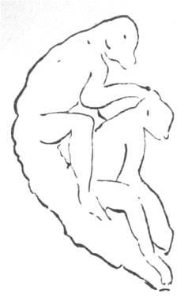
第11図 マハエヴリプラームにある二猴の彫像
猴を
馬厩に
維ぐ事については柳田君の『山島民譚集』に詳説あり、重複を
厭いここにはかの書に見えぬ事のみなるべく出そう。『広益俗説弁』その他に、この事、『
稗海』に、晋の趙固の馬、病みしを
郭璞の勧めにより猴と馴れしめて癒えたとあるに基づくといえど、『梅村載筆』には猿を厩に維ぐは馬によしという事、『周礼註疏』にありと記す。現に座右にあれどちょっと多冊でその文を見出さず。註にあらば晋より前、後漢の時既にこの説あったはずだが、疏にあらば晋より後のはずでいずれとも今分らぬ。しかし『淵鑑類函』四三二、後漢王延寿王孫賦、既に酔い眠った猴を縛り帰って庭厩に
繋ぐとあれば、郭璞に始まったとは
大啌だ。それから、
伊勢貞丈、武士、厩の神を知りたる人少なしとて、『諸社根元記』と『扶桑略記』より延喜天徳頃
左右馬寮に坐せし、生馬の神、保馬の神を挙げ、『書紀』の
保食神牛馬を生じたるよりこの二神号を帯びたのだろといった（『あふひづくり』上）、この二神は猴でなかろう。『
塵添 嚢抄
嚢抄』四、猿を馬の守りとて馬屋に掛くるは如何、猿を山父、馬を山子といえば、父子の義を以て守りとするか、ただし
馬櫪神とて厩神
在す、両足下に猿と
鶺鴒とを蹈ませて二手に剣を持たしめたり、宋朝にはこれを馬の守りとす、この神の踏ませるものなれば猿ばかりをも用ゆるにや。
橘守国の『
写宝袋』にその像を出せるが『
嚢抄』の所記と違う。柳田氏は猿を添うるは判っているが、鶺鴒の意味分らず、あるいは馬神と水神との相互関係を推測せしむる料にあらずやといわれたが、川柳に「鶺鴒も一度教へて呆れ果て」、どど
一にも「神に教えた鶺鴒よりもおしの
番いが羨まし」ナント詠んだごとく、この鳥特異の動作を示して二尊に高尚なる学課を授け参らせたに因って、「逢ふ事を、
稲負せ鳥の教へずば、人を恋に惑はましやは」それを聞き伝えたものか、嬌女神ヴィナスの異態てふアマトンテの半男女神はこの鳥を使者とし、その信徒に媚薬として珍重された。今村鞆君
元山府尹たり、近く『増補朝鮮風俗集』を恵贈さる。内に言えるは鮮人の思想貧弱にして恋愛文学なく、その男女の事を叙するや「これと通ず」「これを御す」と卑野露骨にして
憚らずと。それについての
鄙見は他日に譲り差し当り述ぶるは、『
淮南子』に〈景陽酒に淫し、髪を被りて婦人を御し、諸侯を威服す〉。その他古文に〈婦女を御す〉というが多い。これは
鹿爪らしい六芸の礼楽
射御の御とは別にしてしかも同源の語で、腰を動かすてふ本義だ。
所詮鶺鴒の絶えず尾を振るごとくせば、御馬の術も上達すてふ徴象で、さてこそ馬の災を除く猴とこの鳥を踏んで、馬櫪神よく馬を養いよく馬を御すと示したのだ。何と
畏れ入ったろう。また按ずるにホワイトの『セルボルン博物志』に牛が沢中に草食う際、鶺鴒その身辺を飛び廻り、鼻に接し腹下を
潜って牛に著いた蠅を食う。天の経済に長ぜるかかる縁遠き二物をして各々自利利他せしむと書いて、利はよく他人同士を和せしむというたは、義は利の和なりてふ支那の文句にも合えば、ちと危険思想らしいがクロポトキンの『互助論』にもありそうな。
惟うに鶺鴒は支那で馬の害虫を除く功あるのでなかろうか。張華の『博物志』三に〈蜀山の南高山上に物あり、
猴のごとく
長七尺、能く人行健走す、名づけて
猴※［＃「けものへん＋矍」、U+7383、127-10］という、一名馬化、同じく道を行く婦人に、好き者あればすなわちこれを盗みて以て去る〉、『奥羽観跡聞老志』四に、駒岳の神は、昔馬首獣の者生まれ、父母怖れて棄つると猴が
葛の葉を食わせて育てた、死後この神と成ったと
出づ。『マハバーラタ』にはハリー神女が馬と猴の母だという。こうなるとどうも猴と馬が近親らしい。『
虎 経
経』に猴を厩に
畜えば馬のために悪を避け、疥癬を去るとある。悪を避けは西洋でいう邪視を避くる事でこれが一番確説らしい。アラビア人など駿馬が悪鬼や人の羨み見る眼毒に
中らるるを恐るる事甚だしく、種々の物を
佩びしめてこれを避く。和漢とも
本邪視を避くるため猴を厩に置き、馬を
睨むものの眼毒を種々走り廻る猿の方へ転じて力抜けせしめる
企みだったのだ。また疥癬を去るとあるより推すに、馬の毛に付いた虫や卵を猴が取って馬を安んずるのかも知れぬ。
烟管を掃除したり小児の頭髪を探ったりよくする。『新増
犬筑波集』に「秘蔵の花の枝をこそ折れ」「引き寄せてつぶり春風我息子」「
虱見るまねするは
壬生猿」。壬生猿何の義か知らぬが、猴同士虱を捜り合うは毎度見及ぶ。しかるに知人アッケルマンの『ポピュラー・ファラシース』にいわく、ロンドン動物園書記ミッチェル博士がかの園の案内記に書いたは、世人一汎に想うと反対に、猴が
蚤に
咋わるる事極めて
稀だ。そは猴ども互いにしばしば毛を探り合うからだが、それにしても猴が毛を探って何か取り食うは多くは蚤でなくて、時々皮膚の細孔から出る
鹹き排出物の細塊であると。ただし虱の事を書いていないは物足らぬ。この話で思い出したは享保二十年板
其碩の『渡世身持談義』五、有徳上人の語に「しからばあまねく情知りの太夫と名を
顕わさんがために
身上りしての
間夫狂いとや、さもあらば親方も
遣り手も商い事の方便と合点して、
強ちに間夫をせき客の吟味はせまじき事なるに、様々の
折檻を加うるはこれいかに、その上三ヶ津を始め諸国の色里に
深間の男と
廓を去り、また浮名立ててもその間夫の事思い切らぬ故に、年季の中にまた遠国の
色里へ売りてやられ、あるいは廓より茶屋
風呂屋の猿と変じて
垢を
掻いて名を流す女郎あり、これ皆町の息子親の呼んで当てがう女房を嫌い、
傾城に
泥みて勘当受け、
跡職を得取らずして
紙子一重の境界となる
類い、我身知らずの
性悪という者ならずや」、風呂屋の猿とは『嬉遊笑覧』九に、『一代女』五、一夜を銀六匁にて呼子鳥、これ伝受女なり、
覚束なくて尋ねけるに、風呂者を猿というなるべし。暮方より人に呼ばれける（風呂屋女に
仇名を付けて猿というは垢をかくという意となり）とあり。正徳元年板
其碩の『
傾城禁短気』に「この津の橋々に隠れなき名題の呂州（風呂屋女を指す）猿女上人」、一向宗の
顕如に猿をいいかけたり。元禄十三年板『御前義経記』五にも「以前の異名は湯屋猿と申し煩悩の垢をすりたる身」とあり。それから『
信長記』八「美濃近江の境に山中という処、道傍にいつも変らずいる乞食あり。信長その故を問うに在処の者いう、昔当所山中の処にて常磐御前を殺せし者の子孫、代々
頑わ者と生まれて乞食す、山中の猿とはこの者と、六月二十六日
上洛取り紛れ半ば、かの者の事思い出で、
木綿二十反手ずから取り出し猿に下され、この半分にて処の者隣家に小屋をさし、飢死せざるように情を掛け、隣郷の者ども、麦、出候わば麦を一度、秋後には米を一度、一年に二度ずつ取らすべしと」。これは代々不具な賤民を
貌の醜きより猿と名づけたと見える。
終りに述べ置くは、インドとシャムで象厩に猴を
畜えば、象を息災にすと信ずる由書いたが、近日一七七一年パリ板ツルパンの『
暹羅史』に、シャムの象厩に猴を飼い、邪気が厩を襲えば猴これを引き受け象害を免がる。象は
天禀猴を愛するとあるを見出した。邪気とは只今学者どものいう邪視で、猴が避雷針様に邪視力を導き去るから、象、難を免るるのだ。前述熊野の牛舎の例もあり、猴を繋ぐは馬厩に限らぬと判る。さて、前年予植物同士相好き嫌いする説をロンドンで出し大いに注意を
惹いたが、その後
彼方よりの来信を見るに、綿羊は常に鹿の蕃殖を妨げ、山羊を牛舎に飼えば、牛、常に息災で肥え太る由一汎に信ぜらるという。ロメーンズの『動物智慧論』にも
が
太く猫を愛した例を出す。惟うに害虫駆除とか邪視を避くるとかのほかに、実際、象、馬、牛は天禀猴を好むのかも知れぬ。この事深く心理学者や農学者、獣医諸君の研究を
俟つ次第である。
（大正九年十二月、『太陽』二六ノ一四）
 〕」乾元社
〕」乾元社